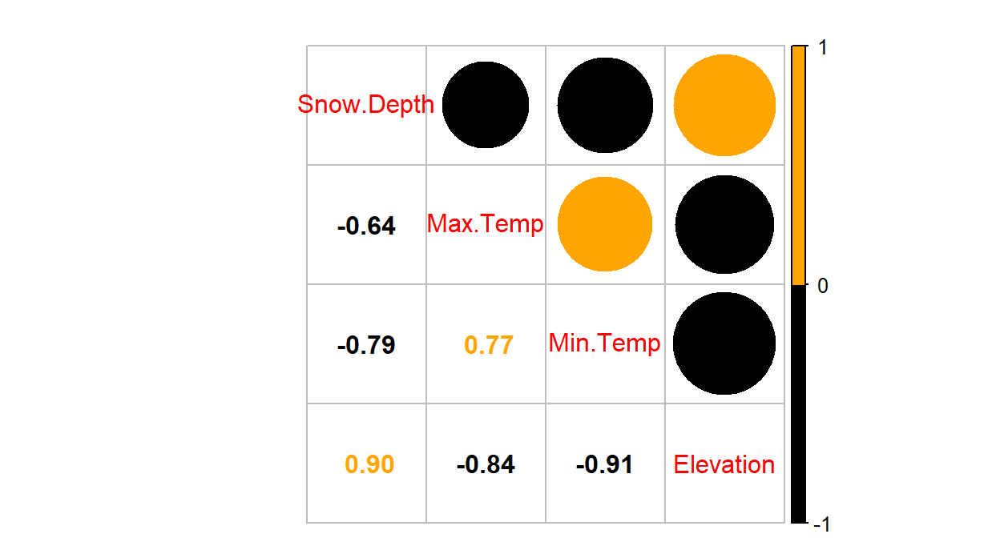

Chapter 8 Multiple linear regression
8.1 Going from SLR to MLR
In many situations, especially in observational studies, it is unlikely that the system is simple enough to be characterized by a single predictor variable. In experiments, if we randomly assign levels of a predictor variable we can assume that the impacts of other variables cancel out as a direct result of the random assignment. But it is possible even in these experimental situations that we can “improve” our model for the response variable by adding additional predictor variables that explain additional variation in the responses, reducing the amount of unexplained variation. This can allow more precise inferences to be generated from the model. As mentioned previously, it might be useful to know the sex or weight of the subjects in the Beers vs BAC study to account for more of the variation in the responses – this idea motivates our final topic: multiple linear regression (MLR) models. In observational studies, we can think of a suite of characteristics of observations that might be related to a response variable. For example, consider a study of yearly salaries and variables that might explain the amount people get paid. We might be most interested in seeing how incomes change based on age, but it would be hard to ignore potential differences based on sex and education level. Trying to explain incomes would likely require more than one predictor variable and we wouldn’t be able to explain all the variability in the responses just based on gender and education level, but a model using those variables might still provide some useful information about each component and about age impacts on income after we adjust (control) for sex and education. The extension to MLR allows us to incorporate multiple predictors into a regression model. Geometrically, this is a way of relating many different dimensions (number of \(x\text{'s}\)) to what happened in a single response variable (one dimension).
We start with the same model as in SLR except now we allow \(K\) different \(x\text{'s}\):
\[y_i = \beta_0 + \beta_1x_{1i} + \beta_2x_{2i}+ \ldots + \beta_Kx_{Ki} + \varepsilon_i\]
Note that if \(K = 1\), we are back to SLR. In the MLR model, there are \(K\) predictors and we still have a \(y\)-intercept. The MLR model carries the same assumptions as an SLR model with a couple of slight tweaks specific to MLR (see Section 8.2 for the details on the changes to the validity conditions).
We are able to use the
least squares criterion for estimating the regression coefficients in MLR, but
the mathematics are beyond the scope of this course.
The lm function takes
care of finding the least squares coefficients using a very sophisticated
algorithm131. The estimated
regression equation it returns is:
\[\widehat{y}_i = b_0 + b_1x_{1i} +b_2x_{2i}+\ldots+b_Kx_{Ki}\]
where each \(b_k\) estimates its corresponding parameter \(\beta_k\).
An example of snow depths at some high elevation locations in Montana on a day in
April provides a nice motivation for these methods. A random sample of
\(n = 25\) Montana locations (from the population of \(N = 85\) at the time) were obtained
from the Natural Resources Conversation Service’s website
(http://www.wcc.nrcs.usda.gov/snotel/Montana/montana.html) a few years ago.
Information on the snow depth (Snow.Depth) in inches, daily Minimum and
Maximum Temperatures (Min.Temp and Max.Temp) in \(^\circ F\) and
elevation of the site (Elevation) in feet. A snow science researcher (or
spring back-country skier) might be interested in understanding Snow depth
as a function of Minimum Temperature, Maximum Temperature, and Elevation.
One might assume that colder
and higher places will have more snow, but using just one of the predictor
variables might leave out some important predictive information. The following
code loads the data set and makes the scatterplot matrix
(Figure 8.1) to allow
some preliminary assessment of the pairwise relationships.
snotel_s <- read_csv("http://www.math.montana.edu/courses/s217/documents/snotel_s.csv")library(GGally)
# Reorder columns slightly and only plot quantitative variables using "columns = ..."
snotel_s %>% ggpairs(columns = c(4:6,3)) +
theme_bw()
Figure 8.1: Scatterplot matrix of data from a sample of SNOTEL sites in April on four variables.
It appears that there are many strong linear relationships between the variables, with Elevation and Snow Depth having the largest magnitude, r = 0.80. Higher temperatures seem to be associated with less snow – not a big surprise so far! There might be an outlier at an elevation of 7400 feet and a snow depth below 10 inches that we should explore further.
A new issue arises in attempting to build MLR models called multicollinearity. Again, it is a not surprise that temperature and elevation are correlated but that creates a problem if we try to put them both into a model to explain snow depth. Is it the elevation, temperature, or the combination of both that matters for getting and retaining more snow? Correlation between predictor variables is called multicollinearity and makes estimation and interpretation of MLR models more complicated than in SLR. Section 8.5 deals with this issue directly and discusses methods for detecting its presence. For now, remember that in MLR this issue sometimes makes it difficult to disentangle the impacts of different predictor variables on the response when the predictors share information – when they are correlated.
To get familiar with this example, we can start with fitting some potential SLR models and plotting the estimated models. Figure 8.2 contains the result for the SLR using Elevation and results for two temperature based models are in Figures 8.3 and 8.4. Snow Depth is selected as the obvious response variable both due to skier interest and potential scientific causation (snow can’t change elevation but elevation could be the driver of snow deposition and retention).

Figure 8.2: Plot of the estimated SLR model for Snow Depth with Elevation as the predictor along with observations and smoothing line generated by the residuals = T option being specified.
Based on the model summaries provided below, the three estimated SLR models are:
\[\begin{array}{rl} \widehat{\text{SnowDepth}}_i & = -72.006 + 0.0163\cdot\text{Elevation}_i, \\ \widehat{\text{SnowDepth}}_i & = 174.096 - 4.884\cdot\text{MinTemp}_i,\text{ and} \\ \widehat{\text{SnowDepth}}_i & = 122.672 - 2.284\cdot\text{MaxTemp}_i. \end{array}\]
The term-plots of the estimated models reinforce our expected results, showing a positive change in Snow Depth for higher Elevations and negative impacts for increasing temperatures on Snow Depth. These plots are made across the observed range132 of the predictor variable and help us to get a sense of the total impacts of predictors. For example, for elevation in Figure 8.2, the smallest observed value was 4925 feet and the largest was 8300 feet. The regression line goes from estimating a mean snow depth of 8 inches to 63 inches. That gives you some practical idea of the size of the estimated Snow Depth change for the changes in Elevation observed in the data. Putting this together, we can say that there was around a 55 inch change in predicted snow depths for a close to 3400 foot increase in elevation. This helps make the slope coefficient of 0.0163 in the model more easily understood.
Remember that in SLR, the range of \(x\) matters just as much as the units of \(x\) in determining the practical importance and size of the slope coefficient. A value of 0.0163 looks small but is actually at the heart of a pretty interesting model for predicting snow depth. A one foot change of elevation is “tiny” here relative to changes in the response so the slope coefficient can be small and still amount to big changes in the predicted response across the range of values of \(x\). If the Elevation had been recorded in thousands of feet, then the slope would have been estimated to be \(0.0163*1000 = 16.3\) inches change in mean Snow Depth for a 1000 foot increase in elevation.
The plots of the two estimated temperature models in Figures 8.3 and 8.4 suggest a similar change in the responses over the range of observed temperatures. Those predictors range from 22\(^\circ F\) to 34\(^\circ F\) (minimum temperature) and from 26\(^\circ F\) to 50\(^\circ F\) (maximum temperature). This tells us a 1\(^\circ F\) increase in either temperature is a greater proportion of the observed range of each predictor than a 1 unit (foot) increase in elevation, so the two temperature variables will generate larger apparent magnitudes of slope coefficients. But having large slope coefficients is no guarantee of a good model – in fact, the elevation model has the highest R2 value of these three models even though its slope coefficient looks tiny compared to the other models.

Figure 8.3: Plot of the estimated SLR model using Min Temp as predictor.

Figure 8.4: Plot of the estimated SLR model using Max Temp as predictor.
m1 <- lm(Snow.Depth ~ Elevation, data = snotel_s)
m2 <- lm(Snow.Depth ~ Min.Temp, data = snotel_s)
m3 <- lm(Snow.Depth ~ Max.Temp, data = snotel_s)
library(effects)
plot(allEffects(m1, residuals = T), main = "SLR: Effect of Elevation")
plot(allEffects(m2, residuals = T), main = "SLR: Effect of Min Temp")
plot(allEffects(m3, residuals = T), main = "SLR: Effect of Max Temp")summary(m1)##
## Call:
## lm(formula = Snow.Depth ~ Elevation, data = snotel_s)
##
## Residuals:
## Min 1Q Median 3Q Max
## -36.416 -5.135 -1.767 7.645 23.508
##
## Coefficients:
## Estimate Std. Error t value Pr(>|t|)
## (Intercept) -72.005873 17.712927 -4.065 0.000478
## Elevation 0.016275 0.002579 6.311 1.93e-06
##
## Residual standard error: 13.27 on 23 degrees of freedom
## Multiple R-squared: 0.634, Adjusted R-squared: 0.618
## F-statistic: 39.83 on 1 and 23 DF, p-value: 1.933e-06summary(m2)##
## Call:
## lm(formula = Snow.Depth ~ Min.Temp, data = snotel_s)
##
## Residuals:
## Min 1Q Median 3Q Max
## -26.156 -11.238 2.810 9.846 26.444
##
## Coefficients:
## Estimate Std. Error t value Pr(>|t|)
## (Intercept) 174.0963 25.5628 6.811 6.04e-07
## Min.Temp -4.8836 0.9148 -5.339 2.02e-05
##
## Residual standard error: 14.65 on 23 degrees of freedom
## Multiple R-squared: 0.5534, Adjusted R-squared: 0.534
## F-statistic: 28.5 on 1 and 23 DF, p-value: 2.022e-05summary(m3)##
## Call:
## lm(formula = Snow.Depth ~ Max.Temp, data = snotel_s)
##
## Residuals:
## Min 1Q Median 3Q Max
## -26.447 -10.367 -4.394 10.042 34.774
##
## Coefficients:
## Estimate Std. Error t value Pr(>|t|)
## (Intercept) 122.6723 19.6380 6.247 2.25e-06
## Max.Temp -2.2840 0.5257 -4.345 0.000238
##
## Residual standard error: 16.25 on 23 degrees of freedom
## Multiple R-squared: 0.4508, Adjusted R-squared: 0.4269
## F-statistic: 18.88 on 1 and 23 DF, p-value: 0.0002385Since all three variables look like they are potentially useful in predicting
snow depth, we want to consider if an MLR model might explain more of the
variability in Snow Depth. To fit an MLR model, we use the same general format
as in previous topics but with adding “+” between any additional
predictors133 we want to add to the model,
y ~ x1 + x2 + ... + xk:
m4 <- lm(Snow.Depth ~ Elevation + Min.Temp + Max.Temp, data = snotel_s)
summary(m4)##
## Call:
## lm(formula = Snow.Depth ~ Elevation + Min.Temp + Max.Temp, data = snotel_s)
##
## Residuals:
## Min 1Q Median 3Q Max
## -29.508 -7.679 -3.139 9.627 26.394
##
## Coefficients:
## Estimate Std. Error t value Pr(>|t|)
## (Intercept) -10.506529 99.616286 -0.105 0.9170
## Elevation 0.012332 0.006536 1.887 0.0731
## Min.Temp -0.504970 2.042614 -0.247 0.8071
## Max.Temp -0.561892 0.673219 -0.835 0.4133
##
## Residual standard error: 13.6 on 21 degrees of freedom
## Multiple R-squared: 0.6485, Adjusted R-squared: 0.5983
## F-statistic: 12.91 on 3 and 21 DF, p-value: 5.328e-05plot(allEffects(m4, residuals = T), main = "MLR model with Elev, Min, & Max Temps")
Figure 8.5: Term-plots for the MLR for Snow Depth based on Elevation, Min Temp and Max Temp. Compare this plot that comes from one MLR model to Figures 8.2, 8.3, and 8.4 for comparable SLR models. Note the points in these panels are the partial residuals that are generated after controlling for the other two of the three variables as explained below.
Based on the output, the estimated MLR model is
\[\widehat{\text{SnowDepth}}_i = -10.51 + 0.0123\cdot\text{Elevation}_i -0.505\cdot\text{MinTemp}_i - 0.562\cdot\text{MaxTemp}_i\]
The direction of the estimated slope coefficients were similar but they all changed in magnitude as compared to the respective SLRs, as seen in the estimated term-plots from the MLR model in Figure 8.5.
There are two ways to think about the changes from individual SLR slope coefficients to the similar MLR results here.
Each term in the MLR is the result for estimating each slope after controlling for the other two variables (and we will always use this sort of interpretation any time we interpret MLR effects). For the Elevation slope, we would say that the slope coefficient is “corrected for” or “adjusted for” the variability that is explained by the temperature variables in the model.
Because of multicollinearity in the predictors, the variables might share information that is useful for explaining the variability in the response variable, so the slope coefficients of each predictor get perturbed because the model cannot separate their effects on the response. This issue disappears when the predictors are uncorrelated or even just minimally correlated.
There are some ramifications of multicollinearity in MLR:
Adding variables to a model might lead to almost no improvement in the overall variability explained by the model.
Adding variables to a model can cause slope coefficients to change signs as well as magnitudes.
Adding variables to a model can lead to inflated standard errors for some or all of the coefficients (this is less obvious but is related to the shared information in predictors making it less clear what slope coefficient to use for each variable, so more uncertainty in their estimation).
In extreme cases of multicollinearity, it may even be impossible to obtain some or any coefficient estimates.
These seem like pretty serious issues and they are but there are many, many situations where we proceed with MLR even in the presence of potentially correlated predictors. It is likely that you have heard or read about inferences from models that are dealing with this issue – for example, medical studies often report the increased risk of death from some behavior or trait after controlling for gender, age, health status, etc. In many research articles, it is becoming common practice to report the slope for a variable that is of most interest with it in the model alone (SLR) and in models after adjusting for the other variables that are expected to matter. The “adjusted for other variables” results are built with MLR or related multiple-predictor models like MLR.
8.2 Validity conditions in MLR
But before we get too excited about any results, we should always assess our validity conditions. For MLR, they are similar to those for SLR:
Quantitative variables condition:
Independence of observations:
This assumption is about the responses – we must assume that they were collected in a fashion so that they can be assumed to be independent. This implies that we also have independent random errors.
This is not an assumption about the predictor variables!
Linearity of relationship (NEW VERSION FOR MLR!):
Linearity is assumed between the response variable and each explanatory variable (\(y\) and each \(x\)).
We can check this three ways:
Make plots of the response versus each explanatory variable:
- Only visual evidence of a curving relationship is a problem here. Transformations of individual explanatory variables or the response are possible. It is possible to not find a problem in this plot that becomes more obvious when we account for variability that is explained by other variables in the partial residuals.
Examine the Residuals vs Fitted plot:
- When using MLR, curves in the residuals vs. fitted values suggest a missed curving relationship with at least one predictor variable, but it will not be specific as to which one is non-linear. Revisit the scatterplots to identify the source of the issue.
Examine partial residuals and smoothing line in term-plots.
- Turning on the
residuals = Toption in the effects plot allows direct assessment of residuals vs each predictor after accounting for others. Look for clear patterns in the partial residuals134 that the smoothing line is also following for potential issues with the linearity assumption.
- Turning on the
Multicollinearity effects checked for:
Issues here do not mean we cannot proceed with a given model, but it can impact our ability to trust and interpret the estimated terms. Extreme issues might require removing some highly correlated variables prior to really focusing on a model.
Check a scatterplot or correlation matrix to assess the potential for shared information in different predictor variables.
Use the diagnostic measure called a variance inflation factor (VIF) discussed in Section 8.5 (we need to develop some ideas first to understand this measure).
Equal (constant) variance:
- Same as before since it pertains to the residuals.
Normality of residuals:
- Same as before since it pertains to the residuals.
No influential points:
Leverage is now determined by how unusual a point is for multiple explanatory variables.
The leverage values in the Residuals vs Leverage plot are scaled to add up to the degrees of freedom (df) used for the model which is the number of explanatory variables (\(K\)) plus 1, so \(K+1\).
The scale of leverages depends on the complexity of the model through the df and the sample size.
The interpretation is still that the larger the leverage value, the more leverage the point has.
The mean leverage is always (model used df)/n = (K+1)/n – so focus on the values with above average leverage.
- For example, with \(K = 3\) and \(n = 20\), the average leverage is \(4/20 = 1/5\).
High leverage points whose response does not follow the pattern defined by the other observations (now based on patterns for multiple \(x\text{'s}\) with the response) will be influential.
Use the Residual’s vs Leverage plot to identify problematic points. Explore further with Cook’s D continuing to provide a measure of the influence of each observation.
- The rules and interpretations for Cook’s D are the same as in SLR (over 0.5 is possibly influential and over 1 is definitely influential).
While not a condition for use of the methods, a note about random assignment and random sampling is useful here in considering the scope of inference of any results. To make inferences about a population, we need to have a representative sample. If we have randomly assigned levels of treatment variables(s), then we can make causal inferences to subjects like those that we could have observed. And if we both have a representative sample and randomization, we can make causal inferences for the population. It is possible to randomly assign levels of variable(s) to subjects and still collect additional information from other explanatory (sometimes called control) variables. The causal interpretations would only be associated with the explanatory variables that were randomly assigned even though the model might contain other variables. Their interpretation still involves noting all the variables included in the model, as demonstrated below. It is even possible to include interactions between randomly assigned variables and other variables – like drug dosage and sex of the subjects. In these cases, causal inference could apply to the treatment levels but noting that the impacts differ based on the non-randomly assigned variable.
For the Snow Depth data, the conditions can be assessed as:
Quantitative variables condition:
- These are all clearly quantitative variables.
Independence of observations:
- The observations are based on a random sample of sites from the population and the sites are spread around the mountains in Montana. Many people would find it to be reasonable to assume that the sites are independent of one another but others would be worried that sites closer together in space might be more similar than they are to far-away observations (this is called spatial correlation). I have been in a heated discussion with statistics colleagues about whether spatial dependency should be considered or if it is valid to ignore it in this sort of situation. It is certainly possible to be concerned about independence of observations here but it takes more advanced statistical methods to actually assess whether there is spatial dependency in these data. Even if you were going to pursue models that incorporate spatial correlations, the first task would be to fit this sort of model and then explore the results. When data are collected across space, you should note that there might be some sort of spatial dependency that could violate the independence assumption.
To assess the remaining assumptions, we can use our diagnostic plots.
The same code as before will provide diagnostic plots. There
is some extra code (par(...)) added to allow us to add labels to the plots
(sub.caption = "...") to know which model is being displayed since we have so
many to discuss here. We can also employ a new approach, which is to simulate
new observations from the model and make plots to compare simulated data sets to
what was observed. The simulate function from Chapter 2
can be used to generate new observations from the
model based on the estimated coefficients and where we know that the assumptions
are true. If the simulated data and the observed data are very different, then
the model is likely dangerous to use for inferences because of this mis-match.
This method can be used to assess the linearity, constant variance, normality of
residuals, and influential points aspects of the model. It is not something used
in every situation, but is especially helpful if you are struggling to decide if
what you are seeing in the diagnostics is just random variability or is really a
clear issue. The regular steps in assessing each assumption are discussed first.
par(mfrow = c(2,2), oma = c(0,0,2,0))
plot(m4, sub.caption = "Diagnostics for m4", pch = 16)
Figure 8.6: Diagnostic plots for model m4: \(\text{Snow.Depth}\sim \text{Elevation} + \text{Min.Temp} + \text{Max.Temp}\).
Linearity of relationship (NEW VERSION FOR MLR!):
Make plots of the response versus each explanatory variable:
- In Figure 8.1, the plots of each variable versus snow depth do not clearly show any nonlinearity except for a little dip around 7000 feet in the plot vs Elevation.
Examine the Residuals vs Fitted plot in Figure 8.6:
- Generally, there is no clear curvature in the Residuals vs Fitted panel and that would be an acceptable answer. However, there is some pattern in the smoothing line that could suggest a more complicated relationship between at least one predictor and the response. This also resembles the pattern in the Elevation vs. Snow depth panel in Figure 8.1 so that might be the source of this “problem.” This suggests that there is the potential to do a little bit better but that it is not unreasonable to proceed on with the MLR, ignoring this little wiggle in the diagnostic plot.
Examine partial residuals as seen in Figure 8.5:
- In the term-plot for elevation from this model, there is a slight pattern in the partial residuals between 6,500 and 7,500 feet. This was also apparent in the original plot and suggests a slight nonlinearity in the pattern of responses versus this explanatory variable.
Multicollinearity effects checked for:
The predictors certainly share information in this application (correlations between -0.67 and -0.91) and multicollinearity looks to be a major concern in being able to understand/separate the impacts of temperatures and elevations on snow depths.
See Section 8.5 for more on this issue in these data.
Equal (constant) variance:
- While there is a little bit more variability in the middle of the fitted values, this is more an artifact of having a smaller data set with a couple of moderate outliers that fell in the same range of fitted values and maybe a little bit of missed curvature. So there is not too much of an issue with this condition.
Normality of residuals:
- The residuals match the normal distribution fairly closely the QQ-plot, showing only a little deviation for observation 9 from a normal distribution and that deviation is extremely minor. There is certainly no indication of a violation of the normality assumption here.
No influential points:
With \(K = 3\) predictors and \(n = 25\) observations, the average leverage is \(4/25 = 0.16\). This gives us a scale to interpret the leverage values on the \(x\)-axis of the lower right panel of our diagnostic plots.
There are three higher leverage points (leverages over 0.3) with only one being influential (point 9) with Cook’s D close to 1.
- Note that point 10 had the same leverage but was not influential with Cook’s D less than 0.5.
We can explore both of these points to see how two observations can have the same leverage and different amounts of influence.
The two flagged points, observations 9 and 10 in the data set, are for the
sites “Northeast Entrance” (to Yellowstone) and “Combination.” We can use the
MLR equation to do some prediction for each observation and calculate residuals
to see how far the model’s predictions are from the actual observed values for
these sites. For the Northeast Entrance, the Max.Temp was 45, the Min.Temp
was 28, and the Elevation was 7350 as you can see in this printout of just the
two rows of the data set available by slicing rows 9 and 10 from snotel_s:
snotel_s %>% slice(9,10)## # A tibble: 2 x 6
## ID Station Snow.Depth Max.Temp Min.Temp Elevation
## <dbl> <chr> <dbl> <dbl> <dbl> <dbl>
## 1 18 Northeast Entrance 11.2 45 28 7350
## 2 53 Combination 14 36 28 5600The estimated Snow Depth for the Northeast Entrance site (observation 9) is found using the estimated model with
\[\begin{array}{rl} \widehat{\text{SnowDepth}}_9 & = -10.51 + 0.0123\cdot\text{Elevation}_9 - 0.505\cdot\text{MinTemp}_9 - 0.562\cdot\text{MaxTemp}_9 \\ & = -10.51 + 0.0123*\boldsymbol{7350} -0.505*\boldsymbol{28} - 0.562*\boldsymbol{45} \\ & = 40.465 \text{ inches,} \end{array}\]
but the observed snow depth was actually \(y_9 = 11.2\) inches. The observed residual is then
\[e_9 = y_9-\widehat{y}_9 = 11.2-40.465 = -29.265 \text{ inches.}\]
So the model “misses” the snow depth by over 29 inches with the model suggesting over 40 inches of snow but only 11 inches actually being present135.
-10.51 + 0.0123*7350 - 0.505*28 - 0.562*45## [1] 40.46511.2 - 40.465## [1] -29.265This point is being rated as influential (Cook’s D \(\approx\) 1) with a leverage of nearly 0.35 and a standardized residual (\(y\)-axis of Residuals vs. Leverage plot) of nearly -3. This suggests that even with this observation impacting/distorting the slope coefficients (that is what influence means), the model is still doing really poorly at fitting this observation. We’ll drop it and re-fit the model in a second to see how the slopes change. First, let’s compare that result to what happened for data point 10 (“Combination”) which was just as high leverage but not identified as influential.
The estimated snow depth for the Combination site is
\[\begin{array}{rl} \widehat{\text{SnowDepth}}_{10} & = -10.51 + 0.0123\cdot\text{Elevation}_{10} - 0.505\cdot\text{MinTemp}_{10} - 0.562\cdot\text{MaxTemp}_{10} \\ & = -10.51 + 0.0123*\boldsymbol{5600} -0.505*\boldsymbol{28} - 0.562*\boldsymbol{36} \\ & = 23.998 \text{ inches.} \end{array}\]
The observed snow depth here was \(y_{10} = 14.0\) inches so the observed residual is then
\[e_{10} = y_{10}-\widehat{y}_{10} = 14.0-23.998 = -9.998 \text{ inches.}\]
This results in a standardized residual of around -1. This is still a “miss” but not as glaring as the previous result and also is not having a major impact on the model’s estimated slope coefficients based on the small Cook’s D value.
-10.51 + 0.0123*5600 - 0.505*28 - 0.562*36## [1] 23.99814 - 23.998## [1] -9.998Note that any predictions using this model presume that it is
trustworthy, but
the large Cook’s D on one observation suggests we should consider the model
after removing that observation. We can re-run the model without the
9th observation using the data set snotel_s %>% slice(-9).
m5 <- lm(Snow.Depth ~ Elevation + Min.Temp + Max.Temp, data = snotel_s %>% slice(-9))
summary(m5)##
## Call:
## lm(formula = Snow.Depth ~ Elevation + Min.Temp + Max.Temp, data = snotel_s %>%
## slice(-9))
##
## Residuals:
## Min 1Q Median 3Q Max
## -29.2918 -4.9757 -0.9146 5.4292 20.4260
##
## Coefficients:
## Estimate Std. Error t value Pr(>|t|)
## (Intercept) -1.424e+02 9.210e+01 -1.546 0.13773
## Elevation 2.141e-02 6.101e-03 3.509 0.00221
## Min.Temp 6.722e-01 1.733e+00 0.388 0.70217
## Max.Temp 5.078e-01 6.486e-01 0.783 0.44283
##
## Residual standard error: 11.29 on 20 degrees of freedom
## Multiple R-squared: 0.7522, Adjusted R-squared: 0.715
## F-statistic: 20.24 on 3 and 20 DF, p-value: 2.843e-06plot(allEffects(m5, residuals = T), main = "MLR model with NE Ent. Removed")
Figure 8.7: Term-plots for the MLR for Snow Depth based on Elevation, Min Temp, and Max Temp with Northeast entrance observation removed from data set (n = 24).
The estimated MLR model with \(n = 24\) after removing the influential “NE Entrance” observation is
\[\widehat{\text{SnowDepth}}_i = -142.4 + 0.0214\cdot\text{Elevation}_i +0.672\cdot\text{MinTemp}_i +0.508\cdot\text{MaxTemp}_i\]
Something unusual has happened here: there is a positive slope for both temperature terms in Figure 8.7 that both contradicts reasonable expectations (warmer temperatures are related to higher snow levels?) and our original SLR results. So what happened? First, removing the influential point has drastically changed the slope coefficients (remember that was the definition of an influential point). Second, when there are predictors that share information, the results can be somewhat unexpected for some or all the predictors when they are all in the model together. Note that the Elevation term looks like what we might expect and seems to have a big impact on the predicted Snow Depths. So when the temperature variables are included in the model they might be functioning to explain some differences in sites that the Elevation term could not explain. This is where our “adjusting for” terminology comes into play. The unusual-looking slopes for the temperature effects can be explained by interpreting them as the estimated change in the response for changes in temperature after we control for the impacts of elevation. Suppose that Elevation explains most of the variation in Snow Depth except for a few sites where the elevation cannot explain all the variability and the site characteristics happen to show higher temperatures and more snow (or lower temperatures and less snow). This could be because warmer areas might have been hit by a recent snow storm while colder areas might have been missed (this is just one day and subject to spatial and temporal fluctuations in precipitation patterns). Or maybe there is another factor related to having marginally warmer temperatures that are accompanied by more snow (maybe the lower snow sites for each elevation were so steep that they couldn’t hold much snow but were also relatively colder?). Thinking about it this way, the temperature model components could provide useful corrections to what Elevation is providing in an overall model and explain more variability than any of the variables could alone. It is also possible that the temperature variables are not needed in a model with Elevation in it, are just “explaining noise,” and should be removed from the model. Each of the next sections take on various aspects of these issues and eventually lead to a general set of modeling and model selection recommendations to help you work in situations as complicated as this. Exploring the results for this model assumes we trust it and, once again, we need to check diagnostics before getting too focused on any particular results from it.
The Residuals vs. Leverage diagnostic plot in Figure 8.8 for the model fit to the data set without NE Entrance (now \(n = 24\)) reveals a new point that is somewhat influential (point 22 in the data set has Cook’s D \(\approx\) 0.5). It is for a location called “Bloody \(\require{color}\colorbox{black}{Redact.}\)”136 which has a leverage of nearly 0.2 and a standardized residual of nearly -3. This point did not show up as influential in the original version of the data set with the same model but it is now. It also shows up as a potential outlier. As we did before, we can explore it a bit by comparing the model predicted snow depth to the observed snow depth. The predicted snow depth for this site (see output below for variable values) is
\[\widehat{\text{SnowDepth}}_{22} = -142.4 + 0.0214*\boldsymbol{7550} +0.672*\boldsymbol{26} +0.508*\boldsymbol{39} = 56.45 \text{ inches.}\]
The observed snow depth was 27.2 inches, so the estimated residual is -39.25 inches. Again, this point is potentially influential and an outlier. Additionally, our model contains results that are not what we would have expected a priori, so it is not unreasonable to consider removing this observation to be able to work towards a model that is fully trustworthy.
par(mfrow = c(2,2), oma = c(0,0,2,0))
plot(m5, sub.caption = "Diagnostics for m5", pch = 16)
Figure 8.8: Diagnostic plots for MLR for Snow Depth based on Elevation, Min Temp and Max Temp with Northeast entrance observation removed from data set.
##
## Call:
## lm(formula = Snow.Depth ~ Elevation + Min.Temp + Max.Temp, data = snotel_s %>%
## slice(-c(9, 22)))
##
## Residuals:
## Min 1Q Median 3Q Max
## -14.878 -4.486 0.024 3.996 20.728
##
## Coefficients:
## Estimate Std. Error t value Pr(>|t|)
## (Intercept) -2.133e+02 7.458e+01 -2.859 0.0100
## Elevation 2.686e-02 4.997e-03 5.374 3.47e-05
## Min.Temp 9.843e-01 1.359e+00 0.724 0.4776
## Max.Temp 1.243e+00 5.452e-01 2.280 0.0343
##
## Residual standard error: 8.832 on 19 degrees of freedom
## Multiple R-squared: 0.8535, Adjusted R-squared: 0.8304
## F-statistic: 36.9 on 3 and 19 DF, p-value: 4.003e-08
Figure 8.9: Diagnostic plots for MLR for Snow Depth based on Elevation, Min Temp and Max Temp with two observations removed (\(n = 23\)).
This worry-some observation is located in the 22nd row of the original data set:
snotel_s %>% slice(22)## # A tibble: 1 x 6
## ID Station Snow.Depth Max.Temp Min.Temp Elevation
## <dbl> <fct> <dbl> <dbl> <dbl> <dbl>
## 1 36 Bloody [Redact.] 27.2 39 26 7550With the removal of both the “Northeast Entrance” and “Bloody
\(\require{color}\colorbox{black}{Redact.}\)” sites, there are \(n = 23\) observations
remaining. This model (m6) seems to contain residual diagnostics (Figure
8.9) that are finally generally reasonable.
m6 <- lm(Snow.Depth ~ Elevation + Min.Temp + Max.Temp, data = snotel_s %>% slice(-c(9,22)))
summary(m6)
par(mfrow = c(2,2), oma = c(0,0,2,0))
plot(m6, sub.caption = "Diagnostics for m6", pch = 16)It is hard to suggest that there any curvature issues and the slight variation in the Scale-Location plot is mostly due to few observations with fitted values around 30 happening to be well approximated by the model. The normality assumption is generally reasonable and no points seem to be overly influential on this model (finally!).
The term-plots (Figure 8.10) show that the temperature slopes are both positive although in this model Max.Temp seems to be more “important” than Min.Temp. We have ruled out individual influential points as the source of un-expected directions in slope coefficients and the more likely issue is multicollinearity – in a model that includes Elevation, the temperature effects may be positive, again acting with the Elevation term to generate the best possible predictions of the observed responses. Throughout this discussion, we have mainly focused on the slope coefficients and diagnostics. We have other tools in MLR to more quantitatively assess and compare different regression models that are considered in the next sections.
plot(allEffects(m6, residuals = T), main = "MLR model with n = 23")
Figure 8.10: Term-plots for the MLR for Snow Depth based on Elevation, Min Temp and Max Temp with two observations removed.
As a final assessment of this model, we can consider simulating a set of
\(n = 23\) responses from this model and then comparing that data set to the one we
just analyzed. This does not change the predictor variables, but creates two new
versions of the response called SimulatedSnow and SimulatedSnow2 in the
following code chunk which are plotted in Figure 8.11. In
exploring two realizations of simulated responses from the model, the results
look fairly similar to the original data set. This model appeared to have
reasonable assumptions and the match between simulated responses and the
original ones reinforces those previous assessments. When the match is not so
close, it can reinforce or create concern about the way that the assumptions
have been assessed using other tools.
set.seed(307)
snotel_final <- snotel_s %>% slice(-c(9,22))
snotel_final <- snotel_final %>%
#Creates first and second set of simulated responses
mutate(SimulatedSnow = simulate(m6)[[1]],
SimulatedSnow2 = simulate(m6)[[1]]
) r1 <- snotel_final %>% ggplot(aes(x = Elevation, y = Snow.Depth)) +
geom_point() +
theme_bw() +
labs(title = "Real Responses")
r2 <- snotel_final %>% ggplot(aes(x = Max.Temp, y = Snow.Depth)) +
geom_point() +
theme_bw() +
labs(title = "Real Responses")
r3 <- snotel_final %>% ggplot(aes(x = Min.Temp, y = Snow.Depth)) +
geom_point() +
theme_bw() +
labs(title = "Real Responses")
s1 <- snotel_final %>% ggplot(aes(x = Elevation, y = SimulatedSnow)) +
geom_point(col = "forestgreen") +
theme_bw() +
labs(title = "First Simulated Responses")
s2 <- snotel_final %>% ggplot(aes(x = Max.Temp, y = SimulatedSnow)) +
geom_point(col = "forestgreen") +
theme_bw() +
labs(title = "First Simulated Responses")
s3 <- snotel_final %>% ggplot(aes(x = Min.Temp, y = SimulatedSnow)) +
geom_point(col = "forestgreen") +
theme_bw() +
labs(title = "First Simulated Responses")
s12 <- snotel_final %>% ggplot(aes(x = Elevation, y = SimulatedSnow2)) +
geom_point(col = "skyblue") +
theme_bw() +
labs(title = "Second Simulated Responses")
s22 <- snotel_final %>% ggplot(aes(x = Max.Temp, y = SimulatedSnow2)) +
geom_point(col = "skyblue") +
theme_bw() +
labs(title = "Second Simulated Responses")
s32 <- snotel_final %>% ggplot(aes(x = Min.Temp, y = SimulatedSnow2)) +
geom_point(col = "skyblue") +
theme_bw() +
labs(title = "Second Simulated Responses")
grid.arrange(r1, r2, r3, s1, s2, s3, s12, s22, s32, ncol = 3)Figure 8.11: Plot of the original responses versus the three predictors (\(n\) = 23 data set) in the top row and two sets of simulated responses versus the predictors in the bottom two rows.
8.3 Interpretation of MLR terms
Since these results (finally) do not contain any highly influential points, we can formally discuss interpretations of the slope coefficients and how the term-plots (Figure 8.10) aid our interpretations. Term-plots in MLR are constructed by holding all the other quantitative variables137 at their mean and generating predictions and 95% CIs for the mean response across the levels of observed values for each predictor variable. This idea also help us to work towards interpretations of each term in an MLR model. For example, for Elevation, the term-plot starts at an elevation around 5000 feet and ends at an elevation around 8000 feet. To generate that line and CIs for the mean snow depth at different elevations, the MLR model of
\[\widehat{\text{SnowDepth}}_i = -213.3 + 0.0269\cdot\text{Elevation}_i +0.984\cdot\text{MinTemp}_i +1.243\cdot\text{MaxTemp}_i\]
is used, but we need to have “something” to put in for the two temperature variables to predict Snow Depth for different Elevations. The typical convention is to hold the “other” variables at their means to generate these plots. This tactic also provides a way of interpreting each slope coefficient. Specifically, we can interpret the Elevation slope as: For a 1 foot increase in Elevation, we estimate the mean Snow Depth to increase by 0.0269 inches, holding the minimum and maximum temperatures constant. More generally, the slope interpretation in an MLR is:
For a 1 [units of \(\boldsymbol{x_k}\)] increase in \(\boldsymbol{x_k}\), we estimate the mean of \(\boldsymbol{y}\) to change by \(\boldsymbol{b_k}\) [units of y], after controlling for [list of other explanatory variables in model].
To make this more concrete, we can recreate some points in the Elevation term-plot. To do this, we first need the mean of the “other” predictors, Min.Temp and Max.Temp.
mean(snotel_final$Min.Temp)## [1] 27.82609mean(snotel_final$Max.Temp)## [1] 36.3913We can put these values into the MLR equation and simplify it by combining like terms, to an equation that is in terms of just Elevation given that we are holding Min.Temp and Max.Temp at their means:
\[\begin{array}{rl} \widehat{\text{SnowDepth}}_i & = -213.3 + 0.0269\cdot\text{Elevation}_i +0.984*\boldsymbol{27.826} +1.243*\boldsymbol{36.391} \\ & = -213.3 + 0.0269\cdot\text{Elevation}_i + 27.38 + 45.23 \\ & = \boldsymbol{-140.69 + 0.0269\cdot\textbf{Elevation}_i}. \end{array}\]
So at the means on the two temperature variables, the model looks like an SLR with an estimated \(y\)-intercept of -140.69 (mean Snow Depth for Elevation of 0 if temperatures are at their means) and an estimated slope of 0.0269. Then we can plot the predicted changes in \(y\) across all the values of the predictor variable (Elevation) while holding the other variables constant. To generate the needed values to define a line, we can plug various Elevation values into the simplified equation:
For an elevation of 5000 at the average temperatures, we predict a mean snow depth of \(-140.69 + 0.0269*5000 = -6.19\) inches.
For an elevation of 6000 at the average temperatures, we predict a mean snow depth of \(-140.69 + 0.0269*6000 = 20.71\) inches.
For an elevation of 8000 at the average temperatures, we predict a mean snow depth of \(-140.69 + 0.0269*8000 = 74.51\) inches.
We can plot this information (Figure 8.12) using the geom_point
function to show the points we calculated and the geom_line function to add
a line that connects the dots. In the geom_point, the size option is
used to make the points a little easier to see.
Figure 8.12: Term-plot for Elevation “by-hand,” holding temperature variables constant at their means.
# Making own effect plot:
modelres2 <- tibble(elevs = c(5000, 6000, 8000), snowdepths = c(-6.19, 20.71, 74.51))
modelres2 %>% ggplot(mapping = aes(x = elevs, y = snowdepths)) +
geom_point(size = 2) +
geom_line(lwd = 1, alpha = .75, col = "tomato") +
theme_bw() +
labs(title = "Effect plot of elevation by hand")Note that we only needed 2 points to define the line but need a denser grid of elevations if we want to add the 95% CIs for the true mean snow depth across the different elevations since they vary as a function of the distance from the mean of the explanatory variables.
The partial residuals in MLR models138 highlight the relationship between each predictor and the response after the impacts of the other variables are incorporated. To do this, we start with the raw residuals, \(e_i = y_i - \hat{y}_i\), which is the left-over part of the responses after accounting for all the predictors. If we add the component of interest to explore (say \(b_kx_{kj}\)) to the residuals, \(e_i\), we get \(e_i + b_kx_{kj} = y_i - \hat{y}_i + b_kx_{kj} = y_i - (b_0 + b_1x_{1i} + b_2x_{2i}+\ldots + b_kx_{ki} + \ldots + b_Kx_{Ki}) + b_kx_{kj}\) \(= y_i - (b_0 + b_1x_{1i} +b_2x_{2i}+\ldots + b_{k-1}x_{k-1,i} + b_{k+1}x_{k+1,i} + \ldots + b_Kx_{Ki})\). This new residual is a partial residual (also known as “component-plus-residuals” to indicate that we put the residuals together with the component of interest to create them). It contains all of the regular residual as well as what would be explained by \(b_kx_{kj}\) given the other variables in the model. Some choose to plot these partial residuals or to center them at 0 and, either way, plot them versus the component, here \(x_{kj}\). In effects plots, partial residuals are vertically scaled to match the height that the term-plot has created by holding the other predictors at their means so they can match the y-axis of the lines of the estimated terms based on the model. However they are vertically located, partial residuals help to highlight missed patterns left in the residuals that might be related to a particular predictor.
To get the associated 95% CIs for an individual term, we could return to
using the predict function for the MLR, again holding the temperatures at
their mean values. The predict function is sensitive and needs the same
variable names as used in the original model fitting to work. First we create a
“new” data set using the seq function to generate the desired grid of
elevations and the rep function139 to repeat the means of the
temperatures for each of elevation values we need to make the plot. The code
creates a specific version of the predictor variables that is stored in
newdata1 that is provided to the predict function so that it will
provide fitted values and CIs across different elevations with temperatures held
constant.
elevs <- seq(from = 5000, to = 8000, length.out = 30)
newdata1 <- tibble(Elevation = elevs, Min.Temp = rep(27.826,30),
Max.Temp = rep(36.3913,30))
newdata1## # A tibble: 30 x 3
## Elevation Min.Temp Max.Temp
## <dbl> <dbl> <dbl>
## 1 5000 27.8 36.4
## 2 5103. 27.8 36.4
## 3 5207. 27.8 36.4
## 4 5310. 27.8 36.4
## 5 5414. 27.8 36.4
## 6 5517. 27.8 36.4
## 7 5621. 27.8 36.4
## 8 5724. 27.8 36.4
## 9 5828. 27.8 36.4
## 10 5931. 27.8 36.4
## # ... with 20 more rowsThe first 10 predicted snow depths along with 95% confidence intervals for the mean, holding temperatures at their means, are:
predict(m6, newdata = newdata1, interval = "confidence") %>% head(10)## fit lwr upr
## 1 -6.3680312 -24.913607 12.17754
## 2 -3.5898846 -21.078518 13.89875
## 3 -0.8117379 -17.246692 15.62322
## 4 1.9664088 -13.418801 17.35162
## 5 4.7445555 -9.595708 19.08482
## 6 7.5227022 -5.778543 20.82395
## 7 10.3008489 -1.968814 22.57051
## 8 13.0789956 1.831433 24.32656
## 9 15.8571423 5.619359 26.09493
## 10 18.6352890 9.390924 27.87965So we could do this with any model for each predictor variable to create
term-plots, or we can just use the allEffects function to do this for us.
This exercise is useful to complete once to understand what is being displayed
in term-plots but using the allEffects function makes getting these plots
much easier.
There are two other model components of possible interest in this model. The slope of 0.984 for Min.Temp suggests that for a 1\(^\circ F\) increase in Minimum Temperature, we estimate a 0.984 inch change in the mean Snow Depth, after controlling for Elevation and Max.Temp at the sites. Similarly, the slope of 1.243 for the Max.Temp suggests that for a 1\(^\circ F\) increase in Maximum Temperature, we estimate a 1.243 inch change in the mean Snow Depth, holding Elevation and Min.Temp constant. Note that there are a variety of ways to note that each term in an MLR is only a particular value given the other variables in the model. We can use words such as “holding the other variables constant” or “after adjusting for the other variables” or “in a model with…” or “for observations with similar values of the other variables but a difference of 1 unit in the predictor..” The main point is to find words that reflect that this single slope coefficient might be different if we had a different overall model and the only way to interpret it is conditional on the other model components.
Term-plots have a few general uses to enhance our regular slope interpretations. They can help us assess how much change in the mean of \(y\) the model predicts over the range of each observed \(x\). This can help you to get a sense of the “practical” importance of each term. Additionally, the term-plots show 95% confidence intervals for the mean response across the range of each variable, holding the other variables at their means. These intervals can be useful for assessing the precision in the estimated mean at different values of each predictor. However, note that you should not use these plots for deciding whether the term should be retained in the model – we have other tools for making that assessment. And one last note about term-plots – they do not mean that the relationships are really linear between the predictor and response variable being displayed. The model forces the relationship to be linear even if that is not the real functional form. Term-plots are not diagnostics for the model unless you add the partial residuals, the lines are just summaries of the model you assumed was correct! Any time we do linear regression, the inferences are contingent upon the model we chose. We know our model is not perfect, but we hope that it helps us learn something about our research question(s) and, to trust its results, we hope it matches the data fairly well.
To both illustrate the calculation of partial residuals and demonstrate their potential utility, a small simulated example is considered. These are simulated data to help to highlight these patterns but are not too different than results that can be seen in some real applications. This situation has a response of simulated cholesterol levels with (also simulated) predictors of age, exercise level, and healthiness level with a sample size of \(n = 100\). First, consider the plot of the response versus each of the predictors in Figure 8.13. It appears that age might be positively related to the response, but exercise and healthiness levels do not appear to be related to the response. But it is important to remember that the response is made up of potential contributions that can be explained by each predictor and unexplained variation, and so plotting the response versus each predictor may not allow us to see the real relationship with each predictor.
a1 <- d1 %>% ggplot(mapping = aes(x = Age, y = CholLevel)) +
geom_point() +
theme_bw()
e1 <- d1 %>% ggplot(mapping = aes(x = ExAmount, y = CholLevel)) +
geom_point() +
theme_bw()
h1 <- d1 %>% ggplot(mapping = aes(x = HealthLevel, y = CholLevel)) +
geom_point() +
theme_bw()
grid.arrange(a1, e1, h1, ncol = 3)Figure 8.13: Scatterplot of Cholesterol level versus three predictors (simulated data).
sim1 <- lm(CholLevel ~ Age + ExAmount + HealthLevel, data = d1)
summary(sim1)$coefficients## Estimate Std. Error t value Pr(>|t|)
## (Intercept) 94.54572326 4.63863859 20.382214 1.204735e-36
## Age 3.50787191 0.14967450 23.436670 1.679060e-41
## ExAmount 0.07447965 0.04029175 1.848508 6.760692e-02
## HealthLevel -1.16373873 0.07212890 -16.134153 4.339546e-29In the summary it appears that each predictor might be related to the response given the other predictors in the model with p-values of <0.0001, 0.068, and < 0.0001 for Age, Exercise, and Healthiness, respectively.
In Figure 8.14, we can see more of the story here by exploring the partial residuals versus each of the predictors. There are actually quite clear relationships for each partial residual versus its predictor. For Age and HealthLevel, the relationship after adjusting for other predictors is clearly positive and linear. For ExAmount there is a clear relationship but it is actually curving, so would violate the linearity assumption. It is interesting that none of these were easy to see or even at all present in plots of the response versus individual predictors. This demonstrates the power of MLR methods to adjust/control for other variables to help us potentially more clearly see relationships between individual predictors and the response, or at least their part of the response.
plot(allEffects(sim1, residuals = T), grid = T)Figure 8.14: Term-plots with partial residuals for Cholesterol level versus three predictors (simulated data).
For those that are interested in these partial residuals, we can
re-construct some of the work that the effects package does to provide them.
As noted above, we need to take our regular residuals and add back in the
impacts of a predictor of interest to calculate the partial residuals. The
regular residuals can be extracted using the residuals function on the
estimated model and the contribution of, say, the ExAmount predictor is found
by taking the values in that variable times its estimated slope coefficient,
\(b_2 = 0.07447965\). Plotting these partial residuals versus ExAmount as in
Figure 8.15 provides a plot that is similar to the second
term-plot except for differences in the y-axis. The y-axis in term-plots
contains an additional adjustment but the two plots provide the same utility in
diagnosing a clear missed curve in the partial residuals that is related to the
ExAmount. Methods to incorporate polynomial functions of the predictor are
simple extensions of the lm work we have been doing but are beyond the scope
of this material – but you should always be checking the partial residuals to
assess the linearity assumption with each quantitative predictor and if you see
a pattern like this, seek out additional statistical resources such as the
Statistical Sleuth (Ramsey and Schafer (2012)) or a statistician for help.
d1 <- d1 %>% mutate(partres = residuals(sim1) + ExAmount * 0.07447965)
d1 %>% ggplot(mapping = aes(x = ExAmount, y = partres)) +
geom_point() +
geom_smooth(method = "lm", se = F) +
geom_smooth(se = F, col = "darkred", lty = 2, lwd = 1) +
theme_bw() +
labs(y = "Partial Residual")
Figure 8.15: Plot of partial residual for ExAmount with the solid line for the MLR fit for this model component and the dashed line for the smoothing line that highlights the curvilinear relationship that the model failed to account for.
8.4 Comparing multiple regression models
With more than one variable, we now have many potential models that we could consider. We could include only one of the predictors, all of them, or combinations of sets of the variables. For example, maybe the model that includes Elevation does not “need” both Min.Temp and Max.Temp? Or maybe the model isn’t improved over an SLR with just Elevation as a predictor. Or maybe none of the predictors are “useful?” In this section, we discuss some general model comparison issues and a metric that can be used to pick among a suite of different models (often called a set of candidate models to reflect that they are all potentially interesting and we need to compare them and possibly pick one).
It is certainly possible the researchers may have an a priori reason to only consider a single model. For example, in a designed experiment where combinations of, say, three different predictors are randomly assigned, the initial model with all three predictors may be sufficient to address all the research questions of interest. One advantage in these situations is that the variable combinations can be created to prevent multicollinearity among the predictors and avoid that complication in interpretations. However, this is more the exception than the rule. Usually, there are competing predictors or questions about whether some predictors matter more than others. This type of research always introduces the potential for multicollinearity to complicate the interpretation of each predictor in the presence of others. Because of this, multiple models are often considered, where “unimportant” variables are dropped from the model. The assessment of “importance” using p-values will be discussed in Section 8.6, but for now we will consider other reasons to pick one model over another.
There are some general reasons to choose a particular model:
Diagnostics are better with one model compared to others.
One model predicts/explains the responses better than the others (R2).
a priori reasons to “use” a particular model, for example in a designed experiment or it includes variable(s) whose estimated slopes directly address the research question(s), even if the variables are not “important” in the model.
Model selection “criteria” suggest one model is better than the others140.
It is OK to consider multiple reasons to select a model but it is dangerous to “shop” for a model across many possible models – a practice which is sometimes called data-dredging and leads to a high chance of spurious results from a single model that is usually reported based on this type of exploration. Just like in other discussions of multiple testing issues previously, if you explore many versions of a model, maybe only keeping the best ones, this is very different from picking one model (and tests) a priori and just exploring that result.
As in SLR, we can use the R2 (the coefficient of determination) to measure the percentage of the variation in the response variable that the model explains. In MLR, it is important to remember that R2 is now an overall measure for the model and not specific to a single variable. It is comparable to other models including those fit with only a single predictor (SLR). So to meet criterion (2), we could simply find the model with the largest R2 value, finding the model that explains the most variation in the responses. Unfortunately for this idea, when you add more “stuff” to a regression model (even “unimportant” predictors), the R2 will always go up. This can be seen by considering
\[R^2 = \frac{\text{SS}_{\text{regression}}}{\text{SS}_{\text{total}}}\ \text{ where }\ \text{SS}_{\text{regression}} = \text{SS}_{\text{total}} - \text{SS}_{\text{error}}\ \text{ and }\ \text{SS}_{\text{error}} = \Sigma(y-\widehat{y})^2\]
Because adding extra variables to a linear model will only make the fitted values better, not worse, the \(\text{SS}_{\text{error}}\) will always go down if more predictors are added to the model. If \(\text{SS}_{\text{error}}\) goes down and \(\text{SS}_{\text{total}}\) is fixed, then adding extra variables will always increase \(\text{SS}_{\text{regression}}\) and, thus, increase R2. This means that R2 is only useful for selecting models when you are picking between two models of the same size (same number of predictors). So we mainly use it as a summary of model quality once we pick a model, not a method of picking among a set of candidate models. Remember that R2 continues to have the property of being between 0 and 1 (or 0% and 100%) and that value refers to the proportion (percentage) of variation in the response explained by the model, whether we are using it for SLR or MLR.
However, there is an adjustment to the R2 measure that makes it useful for selecting among models. The measure is called the adjusted R2. The \(\boldsymbol{R}^2_{\text{adjusted}}\) measure adds a penalty for adding more variables to the model, providing the potential for this measure to decrease if the extra variables do not really benefit the model. The measure is calculated as
\[R^2_{\text{adjusted}} = 1 - \frac{\text{SS}_{\text{error}}/df_{\text{error}}}{\text{SS}_{\text{total}}/(N-1)} = 1 - \frac{\text{MS}_{\text{error}}}{\text{MS}_{\text{total}}},\]
which incorporates the degrees of freedom for the model via the error degrees of freedom which go down as the model complexity increases. This adjustment means that just adding extra useless variables (variables that do not explain very much extra variation) do not increase this measure. That makes this measure useful for model selection since it can help us to stop adding unimportant variables and find a “good” model among a set of candidates. Like the regular R2, larger values are better. The downside to \(\boldsymbol{R}^2_{\text{adjusted}}\) is that it is no longer a percentage of variation in the response that is explained by the model; it can be less than 0 and so has no interpretable scale. It is just “larger is better.” It provides one method for building a model (different from using p-values to drop unimportant variables as discussed below), by fitting a set of candidate models containing different variables and then picking the model with the largest \(\boldsymbol{R}^2_{\text{adjusted}}\). You will want to interpret this new measure on a percentage scale, but do not do that. It is a just a measure to help you pick a model and that is all it is!
One other caveat in model comparison is worth mentioning: make sure you are comparing models for the same responses. That may sound trivial and usually it is. But when there are missing values in the data set, especially on some explanatory variables and not others, it is important to be careful that the \(y\text{'s}\) do not change between models you are comparing. This relates to our Snow Depth modeling because responses were being removed due to their influential nature. We can’t compare R2 or \(\boldsymbol{R}^2_{\text{adjusted}}\) for \(n = 25\) to a model when \(n = 23\) – it isn’t a fair comparison on either measure since they based on the total variability which is changing as the responses used change.
In the MLR (or SLR) model summaries, both the R2 and \(\boldsymbol{R}^2_{\text{adjusted}}\) are available. Make sure you are able to pick out the correct one. For the reduced data set (\(n = 23\)) Snow Depth models, the pertinent part of the model summary for the model with all three predictors is in the last three lines:
m6 <- lm(Snow.Depth ~ Elevation + Min.Temp + Max.Temp,
data = snotel_s %>% slice(-c(9,22)))
summary(m6)##
## Call:
## lm(formula = Snow.Depth ~ Elevation + Min.Temp + Max.Temp, data = snotel_s %>%
## slice(-c(9, 22)))
##
## Residuals:
## Min 1Q Median 3Q Max
## -14.878 -4.486 0.024 3.996 20.728
##
## Coefficients:
## Estimate Std. Error t value Pr(>|t|)
## (Intercept) -2.133e+02 7.458e+01 -2.859 0.0100
## Elevation 2.686e-02 4.997e-03 5.374 3.47e-05
## Min.Temp 9.843e-01 1.359e+00 0.724 0.4776
## Max.Temp 1.243e+00 5.452e-01 2.280 0.0343
##
## Residual standard error: 8.832 on 19 degrees of freedom
## Multiple R-squared: 0.8535, Adjusted R-squared: 0.8304
## F-statistic: 36.9 on 3 and 19 DF, p-value: 4.003e-08There is a value for \(\large{\textbf{Multiple R-Squared}} \text{ of } 0.8535\), this is the R2 value and suggests that the model with Elevation, Min and Max temperatures explains 85.4% of the variation in Snow Depth. The \(\boldsymbol{R}^2_{\text{adjusted}}\) is 0.8304 and is available further to the right labeled as \(\color{red}{{\textbf{Adjusted R-Squared}}}\). We repeated this for a suite of different models for this same \(n = 23\) data set and found the following results in Table 8.1. The top \(\boldsymbol{R}^2_{\text{adjusted}}\) model is the model with Elevation and Max.Temp, which beats out the model with all three variables on \(\boldsymbol{R}^2_{\text{adjusted}}\). Note that the top R2 model is the model with three predictors, but the most complicated model will always have that characteristic.
| Model | \(\boldsymbol{K}\) | \(\boldsymbol{R^2}\) | \(\boldsymbol{R^2_{\text{adjusted}}}\) | \(\boldsymbol{R^2_{\text{adjusted}}}\) Rank |
|---|---|---|---|---|
| SD \(\sim\) Elevation | 1 | 0.8087 | 0.7996 | 3 |
| SD \(\sim\) Min.Temp | 1 | 0.6283 | 0.6106 | 5 |
| SD \(\sim\) Max.Temp | 1 | 0.4131 | 0.3852 | 7 |
| SD \(\sim\) Elevation + Min.Temp | 2 | 0.8134 | 0.7948 | 4 |
| SD \(\sim\) Elevation + Max.Temp | 2 | 0.8495 | 0.8344 | 1 |
| SD \(\sim\) Min.Temp + Max.Temp | 2 | 0.6308 | 0.5939 | 6 |
| SD \(\sim\) Elevation + Min.Temp + Max.Temp | 3 | 0.8535 | 0.8304 | 2 |
The top adjusted R2 model contained Elevation and Max.Temp and has an R2 of 0.8495, so we can say that the model with Elevation and Maximum Temperature explains 84.95% percent of the variation in Snow Depth and also that this model was selected based on the \(\boldsymbol{R}^2_{\text{adjusted}}\). One of the important features of \(\boldsymbol{R}^2_{\text{adjusted}}\) is available in this example – adding variables often does not always increase its value even though R2 does increase with any addition. In Section 8.13 we consider a competitor for this model selection criterion that may “work” a bit better and be extendable into more complicated modeling situations; that measure is called the AIC.
8.5 General recommendations for MLR interpretations and VIFs
There are some important issues to remember141 when interpreting regression models that can result in common mistakes.
Don’t claim to “hold everything constant” for a single individual:
Mathematically this is a correct interpretation of the MLR model but it is rarely the case that we could have this occur in real applications. Is it possible to increase the Elevation while holding the Max.Temp constant? We discussed making term-plots doing exactly this – holding the other variables constant at their means. If we interpret each slope coefficient in an MLR conditionally then we can craft interpretations such as: For locations that have a Max.Temp of, say, \(45^\circ F\) and Min.Temp of, say, \(30^\circ F\), a 1 foot increase in Elevation tends to be associated with a 0.0268 inch increase in Snow Depth on average. This does not try to imply that we can actually make that sort of change but that given those other variables, the change for that variable is a certain magnitude.
Don’t interpret the regression results causally (or casually?)…
Unless you are analyzing the results of a designed experiment (where the levels of the explanatory variable(s) were randomly assigned) you cannot state that a change in that \(x\) causes a change in \(y\), especially for a given individual. The multicollinearity in predictors makes it especially difficult to put too much emphasis on a single slope coefficient because it may be corrupted/modified by the other variables being in the model. In observational studies, there are also all the potential lurking variables that we did not measure or even confounding variables that we did measure but can’t disentangle from the variable used in a particular model. While we do have a complicated mathematical model relating various \(x\text{'s}\) to the response, do not lose that fundamental focus on causal vs non-causal inferences based on the design of the study.
Be cautious about doing prediction in MLR – you might be doing extrapolation!
It is harder to know if you are doing extrapolation in MLR since you could be in a region of the \(x\text{'s}\) that no observations were obtained. Suppose we want to predict the Snow Depth for an Elevation of 6000 and Max.Temp of 30. Is this extrapolation based on Figure 8.16? In other words, can you find any observations “nearby” in the plot of the two variables together? What about an Elevation of 6000 and a Max.Temp of 40? The first prediction is in a different proximity to observations than the second one… In situations with more than two explanatory variables it becomes even more challenging to know whether you are doing extrapolation and the problem grows as the number of dimensions to search increases… In fact, in complicated MLR models we typically do not know whether there are observations “nearby” if we are doing predictions for unobserved combinations of our predictors. Note that Figure 8.16 also reinforces our potential collinearity problem between Elevation and Max.Temp with higher elevations being strongly associated with lower temperatures.

Figure 8.16: Scatterplot of observed Elevations and Maximum Temperatures for SNOTEL data.
Don’t think that the sign of a coefficient is special…
Adding other variables into the MLR models can cause a switch in the coefficients or change their magnitude or make them go from “important” to “unimportant” without changing the slope too much. This is related to the conditionality of the relationships being estimated in MLR and the potential for sharing of information in the predictors when it is present.
Multicollinearity in MLR models:
When explanatory variables are not independent (related) to one another, then including/excluding one variable will have an impact on the other variable. Consider the correlations among the predictors in the SNOTEL data set or visually displayed in Figure 8.17:
library(corrplot) par(mfrow = c(1,1), oma = c(0,0,1,0)) corrplot.mixed(cor(snotel_s %>% slice(-c(9,22)) %>% select(3:6)), upper.col = c(1, "orange"), lower.col = c(1, "orange")) round(cor(snotel_s %>% slice(-c(9,22)) %>% select(3:6)), 2)Figure 8.17: Plot of correlation matrix in the snow depth data set with influential points removed
## Snow.Depth Max.Temp Min.Temp Elevation ## Snow.Depth 1.00 -0.64 -0.79 0.90 ## Max.Temp -0.64 1.00 0.77 -0.84 ## Min.Temp -0.79 0.77 1.00 -0.91 ## Elevation 0.90 -0.84 -0.91 1.00The predictors all share at least moderately strong linear relationships. For example, the \(\boldsymbol{r} = -0.91\) between Min.Temp and Elevation suggests that they contain very similar information and that extends to other pairs of variables as well. When variables share information, their addition to models may not improve the performance of the model and actually can make the estimated coefficients unstable, creating uncertainty in the correct coefficients because of the shared information. It seems that Elevation is related to Snow Depth but maybe it is because it has lower Minimum Temperatures? So you might wonder how we can find the “correct” slopes when they are sharing information in the response variable. The short answer is that we can’t. But we do use Least Squares to find coefficient estimates as we did before – except that we have to remember that these estimates are conditional on other variables in the model for our interpretation since they impact one another within the model. It ends up that the uncertainty of pinning those variables down in the presence of shared information leads to larger SEs for all the slopes. And that we can actually measure how much each of the SEs are inflated because of multicollinearity with other variables in the model using what are called Variance Inflation Factors (or VIFs).
VIFs provide a way to assess the
multicollinearity in the MLR model that is caused by including specific
variables. The amount of information that is
shared between a single explanatory variable and the others can be found by
regressing that variable on the others and calculating R2
for that model. The code for this regression is something like:
lm(X1 ~ X2 + X3 + ... + XK), which regresses X1on X2 through XK.
The
\(1-\boldsymbol{R}^2\) from this regression is the amount of independent
information in X1 that is not explained by (or related to) the other variables in the model.
The VIF for each variable is defined using this quantity as
\(\textbf{VIF}_{\boldsymbol{k}}\boldsymbol{=1/(1-R^2_k)}\) for variable \(k\).
If there is no shared information \((\boldsymbol{R}^2 = 0)\), then the VIF will be
1. But if the information is completely shared with other variables
\((\boldsymbol{R}^2 = 1)\), then the VIF goes to infinity (1/0). Basically, large
VIFs are bad, with the rule of thumb that values over 5 or 10 are considered
“large” values indicating high (over 5) or extreme (over 10) multicollinearity in the model for that particular
variable, both indicating that slope coefficients are dangerous to interpret in that model. We use this scale to determine if multicollinearity is a definite problem for a
variable of interest. But any value of the VIF over 1 indicates some amount of multicollinearity is present. Additionally, the \(\boldsymbol{\sqrt{\textbf{VIF}_k}}\) is
also very interesting as it is the number of times larger than the SE for the
slope for variable \(k\) is due to collinearity with other variables in the model.
The square-root scale is the most useful scale to understand VIFs and allows you to make your own assessment of whether you think the multicollinearity is “important” based on how inflated the SEs are in a particular situation. An example will show how to easily get these results
and where the results come from.
In general, the easy way to obtain VIFs is using the vif function from the
car package (Fox, Weisberg, and Price (2020), Fox (2003)).
It has the advantage of also providing a reasonable
result when we include categorical variables in models
(Sections 8.9 and 8.11). We apply the vif
function directly to a model of interest and it generates values for each explanatory variable.
library(car)
vif(m6)## Elevation Min.Temp Max.Temp
## 8.164201 5.995301 3.350914Not surprisingly, there is an indication of problems with multicollinearity in two of the three variables in the model with the largest issues identified for Elevation and Min.Temp. Both of their VIFs exceed 5 indicating high levels of multicollinearity impacting those terms in the model. On the square-root scale, the VIFs show more interpretation utility.
sqrt(vif(m6))## Elevation Min.Temp Max.Temp
## 2.857307 2.448530 1.830550The result for Elevation of 2.86 suggests that the SE for Elevation is 2.86 times larger than it should be because of multicollinearity with other variables in the model. Similarly, the Min.Temp SE is 2.45 times larger and the Max.Temp SE is 1.83 times larger. Even the result for Max.Temp suggests an issue with multicollinearity even though it is below the cut-off for noting high or extreme issues with shared information. All of this generally suggests issues with multicollinearity in the model and that we need to be cautious in interpreting any slope coefficients from this model because they are all being impacted by shared information in the predictor variables to some degree or another.
In order to see how the VIF is calculated for Elevation, we need to regress Elevation on Min.Temp and Max.Temp. Note that this model is only fit to find the percentage of variation in elevation explained by the temperature variables. It ends up being 0.8775 – so a high percentage of Elevation can be explained by the linear model using min and max temperatures.
# VIF calc:
elev1 <- lm(Elevation ~ Min.Temp + Max.Temp, data = snotel_s %>% slice(-c(9,22)))
summary(elev1)##
## Call:
## lm(formula = Elevation ~ Min.Temp + Max.Temp, data = snotel_s %>%
## slice(-c(9, 22)))
##
## Residuals:
## Min 1Q Median 3Q Max
## -1120.05 -142.99 14.45 186.73 624.61
##
## Coefficients:
## Estimate Std. Error t value Pr(>|t|)
## (Intercept) 14593.21 699.77 20.854 4.85e-15
## Min.Temp -208.82 38.94 -5.363 3.00e-05
## Max.Temp -56.28 20.90 -2.693 0.014
##
## Residual standard error: 395.2 on 20 degrees of freedom
## Multiple R-squared: 0.8775, Adjusted R-squared: 0.8653
## F-statistic: 71.64 on 2 and 20 DF, p-value: 7.601e-10Using this result, we can calculate
\[\text{VIF}_{\text{elevation}} = \dfrac{1}{1-R^2_{\text{elevation}}} = \dfrac{1}{1-0.8775} = \dfrac{1}{0.1225} = 8.16\]
1 - 0.8775## [1] 0.12251/0.1225## [1] 8.163265Note that when we observe small VIFs (close to 1), that provides us with confidence that multicollinearity is not causing problems under the surface of a particular MLR model and that we can trust that the coefficients will not change dramatically based on whether the other terms in the model are removed. Also note that we can’t use the VIFs to do anything about multicollinearity in the models – it is just a diagnostic to understand the magnitude of the problem.
8.6 MLR inference: Parameter inferences using the t-distribution
I have been deliberately vague about what an important variable is up to this point, and chose to focus on some bigger modeling issues. Now we turn our attention to one of the most common tasks in any basic statistical model – assessing whether a particular observed result is more unusual than we would expect by chance if it really wasn’t related to the response. The previous discussions of estimation in MLR models informs our interpretations of of the tests. The \(t\)-tests for slope coefficients are based on our standard recipe – take the estimate, divide it by its standard error and then, assuming the statistic follows a \(t\)-distribution under the null hypothesis, find a p-value. This tests whether each true slope coefficient, \(\beta_k\), is 0 or not, in a model that contains the other variables. Again, sometimes we say “after adjusting for” the other \(x\text{'s}\) or “conditional on” the other \(x\text{'s}\) in the model or “after allowing for”… as in the slope coefficient interpretations above. The main point is that you should not interpret anything related to slope coefficients in MLR without referencing the other variables that are in the model! The tests for the slope coefficients assess \(\boldsymbol{H_0:\beta_k = 0}\), which in words is a test that there is no linear relationship between explanatory variable \(k\) and the response variable, \(y\), in the population, given the other variables in model. The typical alternative hypothesis is \(\boldsymbol{H_0:\beta_k\ne 0}\). In words, the alternative hypothesis is that there is some linear relationship between explanatory variable \(k\) and the response variable, \(y\), in the population, given the other variables in the model. It is also possible to test for positive or negative slopes in the alternative, but this is rarely the first concern, especially when MLR slopes can occasionally come out in unexpected directions.
The test statistic for these hypotheses is
\(\boldsymbol{t = \dfrac{b_k}{\textbf{SE}_k}}\) and, if our assumptions hold,
follows a \(t\)-distribution with \(n-K-1\) df where \(K\) is the number of
predictor variables in the model.
We perform the test for each slope
coefficient, but the test is conditional on the other variables in the model – the order the variables are fit in does
not change \(t\)-test results. For the Snow Depth example with Elevation
and Maximum Temperature as predictors, the pertinent output is in the four
columns of the Coefficient table that is the first part of the model
summary we’ve been working with. You can find the estimated slope
(Estimate column), the SE of the slopes (Std. Error column), the
\(t\)-statistics (t value column), and the p-values (Pr(>|t|) column).
The degrees of freedom for the \(t\)-distributions show up below the coefficients
and the \(df = 20\) here. This is because \(n = 23\) and \(K = 2\), so \(df = 23-2-1 = 20\).
m5 <- lm(Snow.Depth ~ Elevation + Max.Temp, data = snotel_s %>% slice(-c(9,22)))
summary(m5)##
## Call:
## lm(formula = Snow.Depth ~ Elevation + Max.Temp, data = snotel_s %>%
## slice(-c(9, 22)))
##
## Residuals:
## Min 1Q Median 3Q Max
## -14.652 -4.645 0.518 3.744 20.550
##
## Coefficients:
## Estimate Std. Error t value Pr(>|t|)
## (Intercept) -1.675e+02 3.924e+01 -4.269 0.000375
## Elevation 2.407e-02 3.162e-03 7.613 2.48e-07
## Max.Temp 1.253e+00 5.385e-01 2.327 0.030556
##
## Residual standard error: 8.726 on 20 degrees of freedom
## Multiple R-squared: 0.8495, Adjusted R-squared: 0.8344
## F-statistic: 56.43 on 2 and 20 DF, p-value: 5.979e-09The hypotheses for the Maximum Temperature term (Max.Temp) are:
\(\boldsymbol{H_0: \beta_{\textbf{Max.Temp}} = 0}\) given that Elevation is in the model vs
\(\boldsymbol{H_A: \beta_{\textbf{Max.Temp}}\ne 0}\) given that Elevation is in the model.
The test statistic is \(t = 2.327\) with \(df = 20\) (so under the null hypothesis the test statistic follows a \(t_{20}\)-distribution).
The output provides a p-value of \(0.0306\) for this test. We can also find this
using pt:
2*pt(2.327, df = 20, lower.tail = F)## [1] 0.03058319The chance of observing a slope for Max.Temp as extreme or more extreme than assuming there really is no linear relationship between Max.Temp and Snow Depth (in a model with Elevation), is about 3% so this presents moderate evidence against the null hypothesis, in favor of retaining this term in the model.
Conclusion: There is moderate evidence against the null hypothesis of no linear relationship between Max.Temp and Snow Depth (\(t_{20} = 2.33\), p-value = 0.03), once we account for Elevation, so we can conclude that there likely is a linear relationship between them given Elevation in the population of SNOTEL sites in Montana on this day and we should retain this term in the model. Because we cannot randomly assign the temperatures to sites, we cannot conclude that temperature causes changes in the snow depth – in fact it might even be possible for a location to have different temperatures because of different snow depths. The inferences do pertain to the population of SNOTEL sites on this day because of the random sample from the population of sites.
Similarly, we can test for Elevation after controlling for the Maximum Temperature:
\[\boldsymbol{H_0: \beta_{\textbf{Elevation}} = 0 \textbf{ vs } H_A: \beta_{\textbf{Elevation}}\ne 0},\]
given that Max.Temp is in the model:
\(t = 7.613\) (\(df = 20\)) with a p-value of \(0.00000025\) or just \(<0.00001\).
So there is strong evidence against the null hypothesis of no linear relationship between Elevation and Snow Depth, once we adjust for Max.Temp in the population of SNOTEL sites in Montana on this day, so we would conclude that they are linearly related and that we should retain the Elevation predictor in the model with Max.Temp.
There is one last test that is of dubious interest in almost every situation – to test that the \(y\)-intercept \((\boldsymbol{\beta_0})\) in an MLR is 0. This tests if the true mean response is 0 when all the predictor variables are set to 0. I see researchers reporting this p-value frequently and it is possibly the most useless piece of information in the regression model summary. Sometimes less educated statistics users even think this result is proof of something interesting or are disappointed when the p-value is not small. Unless you want to do some prediction and are interested in whether the mean response when all the predictors are set to 0 is different from 0, this test should not be reported or, if reported, is certainly not very interesting142. But we should at least go through the motions on this test once so you don’t make the same mistakes:
\(\boldsymbol{H_0: \beta_0 = 0 \textbf{ vs } H_A: \beta_0\ne 0}\) in a model with Elevation and Maximum Temperature.
\(t = -4.269\), with an assumption that the test statistic follows a \(t_{20}\)-distribution under the null hypothesis, and the p-value \(= 0.000375\).
There is strong evidence against the null hypothesis that the true mean Snow Depth is 0 when the Maximum Temperature is 0 and the Elevation is 0 in the population of SNOTEL sites, so we could conclude that the true mean Snow Depth is different from 0 at these values of the predictors. To reinforce the general uselessness of this test, think about the combination of \(x\text{'s}\) – is that even physically possible in Montana (or the continental US) in April?
Remember when testing slope coefficients in MLR, that if we find weak evidence against the null hypothesis, it does not mean that there is no relationship or even no linear relationship between the variables, but that there is insufficient evidence against the null hypothesis of no linear relationship once we account for the other variables in the model. If you do not find a small p-value for a variable, you should either be cautious when interpreting the coefficient, or not interpret it. Some model building strategies would lead to dropping the term from the model but sometimes we will have models to interpret that contain terms with larger p-values. Sometimes they are still of interest but the weight on the interpretation isn’t as heavy as if the term had a small p-value – you should remember that you can’t prove that coefficient is different from 0 in that model. It also may mean that you don’t know too much about its specific value. Confidence intervals will help us pin down where we think the true slope coefficient might be located, given the other variables in the model, and so are usually pretty interesting to report, regardless of how you approached model building and possible refinement.
Confidence intervals provide the dual uses of inferences for the location of the true slope and whether the true slope seems to be different from 0. The confidence intervals here have our regular format of estimate \(\mp\) margin of error. Like the previous tests, we work with \(t\)-distributions with \(n-K-1\) degrees of freedom. Specifically the 95% confidence interval for slope coefficient \(k\) is
\[\boldsymbol{b_k \mp t^*_{n-K-1}\textbf{SE}_{b_k}}\]
The interpretation is the same as in SLR with the additional tag of “after controlling for the other variables in the model” for the reasons discussed before. The general slope CI interpretation for predictor \(\boldsymbol{x_k}\) in an MLR is:
For a 1 [unit of \(\boldsymbol{x_k}\)] increase in \(\boldsymbol{x_k}\), we are 95% confident that the true mean of \(\boldsymbol{y}\) changes by between LL and UL [units of \(\boldsymbol{Y}\)] in the population, after adjusting for the other \(x\text{'s}\) [list them!].
We can either calculate these intervals as we have many times before or
rely on the confint function to do this:
confint(m5)## 2.5 % 97.5 %
## (Intercept) -249.37903311 -85.67576239
## Elevation 0.01747878 0.03067123
## Max.Temp 0.13001718 2.37644112So for a \(1^\circ F\) increase in Maximum Temperature, we are 95% confident that the true mean Snow Depth will change by between 0.13 and 2.38 inches in the population, after adjusting for the Elevation of the sites. Similarly, for a 1 foot increase in Elevation, we are 95% confident that the true mean Snow Depth will change by between 0.0175 and 0.0307 inches in the population, after adjusting for the Maximum Temperature of the sites.
8.7 Overall F-test in multiple linear regression
In the MLR summary, there is an \(F\)-test and p-value reported at the bottom of the output. For the model with Elevation and Maximum Temperature, the last row of the model summary is:
## F-statistic: 56.43 on 2 and 20 DF, p-value: 5.979e-09This test is called the overall F-test in MLR and is very similar to the \(F\)-test in a reference-coded One-Way ANOVA model. It tests the null hypothesis that involves setting every coefficient except the \(y\)-intercept to 0 (so all the slope coefficients equal 0). We saw this reduced model in the One-Way material when we considered setting all the deviations from the baseline group to 0 under the null hypothesis. We can frame this as a comparison between a full and reduced model as follows:
Full Model: \(y_i = \beta_0 + \beta_1x_{1i} + \beta_2x_{2i}+\cdots + \beta_Kx_{Ki}+\varepsilon_i\)
Reduced Model: \(y_i = \beta_0 + 0x_{1i} + 0x_{2i}+\cdots + 0x_{Ki}+\varepsilon_i\)
The reduced model estimates the same values for all \(y\text{'s}\), \(\widehat{y}_i = \bar{y} = b_0\) and corresponds to the null hypothesis of:
\(\boldsymbol{H_0:}\) No explanatory variables should be included in the model: \(\beta_1 = \beta_2 = \cdots = \beta_K = 0\).
The full model corresponds to the alternative:
\(\boldsymbol{H_A:}\) At least one explanatory variable should be included in the model: Not all \(\beta_k\text{'s} = 0\) for \((k = 1,\ldots,K)\).
Note that \(\beta_0\) is not set to 0 in the reduced model (under the null hypothesis) – it becomes the true mean of \(y\) for all values of the \(x\text{'s}\) since all the predictors are multiplied by coefficients of 0.
The test statistic to assess these hypotheses is \(F = \text{MS}_{\text{model}}/\text{MS}_E\), which is assumed to follow an \(F\)-distribution with \(K\) numerator df and \(n-K-1\) denominator df under the null hypothesis. The output provides us with \(F(2, 20) = 56.43\) and a p-value of \(5.979*10^{-9}\) (p-value \(<0.00001\)) and strong evidence against the null hypothesis. Thus, there is strong evidence against the null hypothesis that the true slopes for the two predictors are 0 and so we would conclude that at least one of the two slope coefficients (Max.Temp’s or Elevation’s) is different from 0 in the population of SNOTEL sites in Montana on this date. While this test is a little bit interesting and a good indicator of something interesting existing in the model, the moment you see this result, you want to know more about each predictor variable. If neither predictor variable is important, we will discover that in the \(t\)-tests for each coefficient and so our general recommendation is to start there.
The overall F-test, then, is really about testing whether there is something good in the model somewhere. And that certainly is important but it is also not too informative. There is one situation where this test is really interesting, when there is only one predictor variable in the model (SLR). In that situation, this test provides exactly the same p-value as the \(t\)-test. \(F\)-tests will be important when we are mixing categorical and quantitative predictor variables in our MLR models (Section 8.12), but the overall \(F\)-test is of very limited utility.
8.8 Case study: First year college GPA and SATs
Many universities require students to have certain test scores in order to be
admitted into their institutions. They
obviously must think that those scores are useful predictors of student success
to use them in this way. Quality assessments of recruiting classes are also
based on their test scores. The Educational Testing Service (the company behind
such fun exams as the SAT and GRE) collected a data set to validate their SAT
on \(n = 1000\) students from an unnamed Midwestern university; the data set is
available in the openintro package (Çetinkaya-Rundel et al. 2021)
in the satgpa data set.
It is unclear from the documentation whether a
random sample was collected, in fact it looks like it certainly wasn’t a random
sample of all incoming students at a large university (more later). What
potential issues would arise if a company was providing a data set to show the
performance of their test and it was not based on a random sample?
We will proceed assuming they used good methods in developing their test
(there are sophisticated
statistical models underlying the development of the SAT and GRE) and also in
obtaining a data set for testing out the performance of their tests that is at
least representative of the students (or some types of students) at this
university. They143 provided information on the SAT Verbal (satv)
and Math (satm) percentiles (these are not the scores but the ranking
percentile that each score translated to in a particular year),
High School GPA (hsgpa), First Year of college GPA (fygpa), Gender (gender of the students coded 1 and 2 with possibly 1 for males and 2 for females – the documentation was also unclear this). Should gender even be displayed in a plot with correlations since it is a categorical variable?144 Our interests here are in whether the two SAT percentiles are (together?)
related to the first year college GPA, describing the size of their impacts
and assessing the predictive potential of SAT-based measures for first year in
college GPA. There are certainly other possible research questions that can be
addressed with these data but this will keep us focused.
library(openintro)
data(satgpa)
satgpa <- as_tibble(satgpa)
satgpa <- satgpa %>% rename(gender = sex , #Renaming variables
satv = sat_v, satm = sat_m, satsum = sat_sum,
hsgpa = hs_gpa,
fygpa = fy_gpa)
satgpa %>%
select(-4) %>%
ggpairs() +
theme_bw()Figure 8.18: Scatterplot matrix of SAT and GPA data set.
There are positive relationships in Figure 8.18 among all the pre-college measures and the college GPA but none are above the moderate strength level. The hsgpa has a highest correlation with first year of college results but its correlation is not that strong. Maybe together in a model the SAT percentiles can also be useful? Also note this plot shows an odd hsgpa of 4.5 that probably should be removed145 if that variable is going to be used (hsgpa was not used in the following models so the observation remains in the data).
In MLR, the modeling process is a bit more complex and often involves more than one model, so we will often avoid the 6+ steps in testing initially and try to generate a model we can use in that more specific process. In this case, the first model of interest using the two SAT percentiles,
\[\text{fygpa}_i = \beta_0 + \beta_{\text{satv}}\text{satv}_i + \beta_{\text{satm}}\text{satm}_i +\varepsilon_i,\]
looks like it might be worth interrogating further so we can jump straight into considering the 6+ steps involved in hypothesis testing for the two slope coefficients to address our RQ about assessing the predictive ability and relationship of the SAT scores on first year college GPA. We will use \(t\)-based inferences, assuming that we can trust the assumptions and the initial plots get us some idea of the potential relationship.
Note that this is not a randomized experiment but we can assume that it is representative of the students at that single university. We would not want to extend these inferences to other universities (who might be more or less selective) or to students who did not get into this university and, especially, not to students that failed to complete the first year. The second and third constraints point to a severe limitation in this research – only students who were accepted, went to, and finished one year at this university could be studied. Lower SAT percentile students might not have been allowed in or may not have finished the first year and higher SAT students might have been attracted to other more prestigious institutions. So the scope of inference is just limited to students that were invited and chose to attend this institution and successfully completed one year of courses. It is hard to know if the SAT “works” when the inferences are so restricted in who they might apply to… But you could see why the company that administers the SAT might want to analyze these data. Educational researchers and institutional admissions offices also often focus on predicting first year retention rates, but that is a categorical response variable (retained/not) and so not compatible with the linear models considered here.
The following code fits the model of interest, provides a model summary, and the diagnostic plots, allowing us to consider the tests of interest:
gpa1 <- lm(fygpa ~ satv + satm, data = satgpa)
summary(gpa1)##
## Call:
## lm(formula = fygpa ~ satv + satm, data = satgpa)
##
## Residuals:
## Min 1Q Median 3Q Max
## -2.19647 -0.44777 0.02895 0.45717 1.60940
##
## Coefficients:
## Estimate Std. Error t value Pr(>|t|)
## (Intercept) 0.007372 0.152292 0.048 0.961
## satv 0.025390 0.002859 8.879 < 2e-16
## satm 0.022395 0.002786 8.037 2.58e-15
##
## Residual standard error: 0.6582 on 997 degrees of freedom
## Multiple R-squared: 0.2122, Adjusted R-squared: 0.2106
## F-statistic: 134.2 on 2 and 997 DF, p-value: < 2.2e-16par(mfrow = c(2,2), oma = c(0,0,2,0))
plot(gpa1, sub.caption = "Diagnostics for GPA model with satv and satm")Figure 8.19: Diagnostic plots for the \(\text{fygpa}\sim\text{satm} + \text{satm}\) model.
Hypotheses of interest:
\(H_0: \beta_\text{satv} = 0\) given satm in the model vs \(H_A: \beta_\text{satv}\ne 0\) given satm in the model.
\(H_0: \beta_\text{satm} = 0\) given satv in the model vs \(H_A: \beta_\text{satm}\ne 0\) given satv in the model.
Plot the data and assess validity conditions:
Quantitative variables condition:
- The variables used here in this model are quantitative. Note that Gender was plotted in the previous scatterplot matrix and is not quantitative – we will explore its use later.
Independence of observations:
- With a sample from a single university from (we are assuming) a single year of students, there is no particular reason to assume a violation of the independence assumption. If there was information about students from different years being included or maybe even from different colleges in the university in a single year, we might worry about systematic differences in the GPAs and violations of the independence assumption. We can’t account for either and there is possibly not a big difference in the GPAs across colleges to be concerned about, especially with a sample of students from a large university.
Linearity of relationships:
The initial scatterplots (Figure 8.18) do not show any clear nonlinearities with each predictor used in this model.
The Residuals vs Fitted and Scale-Location plots (Figure 8.19) do not show much more than a football shape, which is our desired result.
The partial residuals are displayed in Figure 8.20 and do not suggest any clear missed curvature.
- Together, there is no suggestion of a violation of the linearity assumption.
Multicollinearity checked for:
The original scatterplots suggest that there is some collinearity between the two SAT percentiles with a correlation of 0.47. That is actually a bit lower than one might expect and suggests that each score must be measuring some independent information about different characteristics of the students.
VIFs also do not suggest a major issue with multicollinearity in the model with the VIFs for both variables the same at 1.278146. This suggests that both SEs are about 13% larger than they otherwise would have been due to shared information between the two predictor variables.
vif(gpa1)## satv satm ## 1.278278 1.278278sqrt(vif(gpa1))## satv satm ## 1.13061 1.13061Equal (constant) variance:
- There is no clear change in variability as a function of fitted values so no indication of a violation of the constant variance of residuals assumption.
Normality of residuals:
- There is a minor deviation in the upper tail of the residual distribution from normality. It is not pushing towards having larger values than a normal distribution would generate so should not cause us any real problems with inferences from this model. Note that this upper limit is likely due to using GPA as a response variable and it has an upper limit. This is an example of a potentially censored variable. For a continuous variable it is possible that the range of a measurement scale doesn’t distinguish among subjects who differ once they pass a certain point. For example, a 4.0 high school student is likely going to have a high first year college GPA, on average, but there is no room for variability in college GPA up, just down once you are at the top of the GPA scale. For students more in the middle of the range, they can vary up or down. So in some places you can get symmetric distributions around the mean and in others you cannot. There are specific statistical models for these types of responses that are beyond our scope. In this situation, failing to account for the censoring may push some slopes toward 0 a little because we can’t have responses over 4.0 in college GPA to work with.
No influential points:
- There are no influential points. In large data sets, the influence of any point is decreased and even high leverage and outlying points can struggle to have any impacts at all on the results.
So we are fairly comfortable with all the assumptions being at least not clearly violated and so the inferences from our model should be relatively trustworthy.
Calculate the test statistics and p-values:
For satv: \(t = \dfrac{0.02539}{0.002859} = 8.88\) with the \(t\) having \(df = 997\) and p-value \(<0.0001\).
For satm: \(t = \dfrac{0.02240}{0.002786} = 8.04\) with the \(t\) having \(df = 997\) and p-value \(<0.0001\).
Conclusions:
For satv: There is strong evidence against the null hypothesis of no linear relationship between satv and fygpa (\(t_{997} = 8.88\), p-value < 0.0001) and conclude that, in fact, there is a linear relationship between satv percentile and the first year of college GPA, after controlling for the satm percentile, in the population of students that completed their first year at this university.
For satm: There is strong evidence against the null hypothesis of no linear relationship between satm and fygpa (\(t_{997} = 8.04\), p-value < 0.0001)and conclude that, in fact, there is a linear relationship between satm percentile and the first year of college GPA, after controlling for the satv percentile, in the population of students that completed their first year at this university.
Size:
- The model seems to be valid and have predictors with small p-values, but note how much of the variation is not explained by the model. It only explains 21.22% of the variation in the responses. So we found evidence that these variables are useful in predicting the responses, but are they useful enough to use for decisions on admitting students? By quantifying the size of the estimated slope coefficients, we can add to the information about how potentially useful this model might be. The estimated MLR model is
\[\widehat{\text{fygpa}}_i = 0.00737+0.0254\cdot\text{satv}_i+0.0224\cdot\text{satm}_i\]
So for a 1 percent increase in the satv percentile, we estimate, on average, a 0.0254 point change in GPA, after controlling for satm percentile. Similarly, for a 1 percent increase in the satm percentile, we estimate, on average, a 0.0224 point change in GPA, after controlling for satv percentile. While this is a correct interpretation of the slope coefficients, it is often easier to assess “practical” importance of the results by considering how much change this implies over the range of observed predictor values.
The term-plots (Figure 8.20) provide a visualization of the “size” of the differences in the response variable explained by each predictor. The satv term-plot shows that for the range of percentiles from around the 30th percentile to the 70th percentile, the mean first year GPA is predicted to go from approximately 1.9 to 3.0. That is a pretty wide range of differences in GPAs across the range of observed percentiles. This looks like a pretty interesting and important change in the mean first year GPA across that range of different SAT percentiles. Similarly, the satm term-plot shows that the satm percentiles were observed to range between around the 30th percentile and 70th percentile and predict mean GPAs between 1.95 and 2.8. It seems that the SAT Verbal percentiles produce slightly more impacts in the model, holding the other variable constant, but that both are important variables. The 95% confidence intervals for the means in both plots suggest that the results are fairly precisely estimated – there is little variability around the predicted means in each plot. This is mostly a function of the sample size as opposed to the model itself explaining most of the variation in the responses.
plot(allEffects(gpa1, residuals = T))Figure 8.20: Term-plots for the \(\text{fygpa}\sim\text{satv} + \text{satm}\) model with partial residuals.
- The confidence intervals also help us pin down the uncertainty in each
estimated slope coefficient. As always, the “easy” way to get 95% confidence
intervals is using the
confintfunction:
confint(gpa1)## 2.5 % 97.5 %
## (Intercept) -0.29147825 0.30622148
## satv 0.01977864 0.03100106
## satm 0.01692690 0.02786220- So, for a 1 percent increase in the satv percentile, we are 95% confident that the true mean fygpa changes between 0.0198 and 0.031 points, in the population of students who completed this year at this institution, after controlling for satm. The satm result is similar with an interval from 0.0169 and 0.0279. Both of these intervals might benefit from re-scaling the interpretation to, say, a 10 percentile increase in the predictor variable, with the change in the fygpa for that level of increase of satv providing an interval from 0.198 to 0.31 points and for satm providing an interval from 0.169 to 0.279. So a boost of 10% in either exam percentile likely results in a noticeable but not huge average fygpa increase.
Scope of Inference:
The term-plots also inform the types of students attending this university and successfully completing the first year of school. This seems like a good, but maybe not great, institution with few students scoring over the 75th percentile on either SAT Verbal or Math (at least that ended up in this data set). This result makes questions about their sampling mechanism re-occur as to who this data set might actually be representative of…
Note that neither inference is causal because there was no random assignment of SAT percentiles to the subjects. The inferences are also limited to students who stayed in school long enough to get a GPA from their first year of college at this university.
One final use of these methods is to do prediction and generate prediction intervals, which could be quite informative for a student considering going to this university who has a particular set of SAT scores. For example, suppose that the student is interested in the average fygpa to expect with satv at the 30th percentile and satm at the 60th percentile. The predicted mean value is
\[\begin{array}{rl} \widehat{\mu}_{\text{fygpa}_i} & = 0.00737 + 0.0254\cdot\text{satv}_i + 0.0224\cdot\text{satm}_i \\ & = 0.00737 + 0.0254*30 + 0.0224*60 = 2.113. \end{array}\]
This result and the 95% confidence interval for the mean student fygpa at these
scores can be found using the predict function as:
predict(gpa1, newdata = tibble(satv = 30, satm = 60))## 1
## 2.11274predict(gpa1, newdata = tibble(satv = 30,satm = 60), interval = "confidence")## fit lwr upr
## 1 2.11274 1.982612 2.242868For students at the 30th percentile of satv and 60th percentile of satm, we are 95% confident that the true mean first year GPA is between 1.98 and 2.24 points. For an individual student, we would want the 95% prediction interval:
predict(gpa1, newdata = tibble(satv = 30, satm = 60), interval = "prediction")## fit lwr upr
## 1 2.11274 0.8145859 3.410894For a student with satv = 30 and satm = 60, we are 95% sure that their first year GPA will be between 0.81 and 3.4 points. You can see that while we are very certain about the mean in this situation, there is a lot of uncertainty in the predictions for individual students. The PI is so wide as to almost not be useful.
To support this difficulty in getting a precise prediction for a new student, review the original scatterplots and partial residuals: there is quite a bit of vertical variability in first year GPAs for each level of any of the predictors. The residual SE, \(\widehat{\sigma}\), is also informative in this regard – remember that it is the standard deviation of the residuals around the regression line. It is 0.6582, so the SD of new observations around the line is 0.66 GPA points and that is pretty large on a GPA scale. Remember that if the residuals meet our assumptions and follow a normal distribution around the line, observations within 2 or 3 SDs of the mean would be expected which is a large range of GPA values. Figure 8.21 remakes both term-plots, holding the other predictor at its mean, and adds the 95% prediction intervals to show the difference in variability between estimating the mean and pinning down the value of a new observation. The R code is very messy and rarely needed, but hopefully this helps reinforce the differences in these two types of intervals – to make them in MLR, you have to fix all but one of the predictor variables and we usually do that by fixing the other variables at their means.
# Remake effects plots with added 95% PIs
dv1 <- tibble(satv = seq(from = 24, to = 76, length.out = 50), satm = rep(54.4, 50))
mv1 <- as_tibble(predict(gpa1, newdata = dv1, interval = "confidence"))
pv1 <- as_tibble(predict(gpa1, newdata = dv1, interval = "prediction"))
mres_GPA_v <- bind_cols(dv1, mv1, pv1 %>% select(-fit))
# Rename CI and PI limits to have more explicit column names:
mres_GPA_v <- mres_GPA_v %>% rename(lwr_CI = lwr...4, upr_CI = upr...5,
lwr_PI = lwr...6, upr_PI = upr...7)
v1 <- mres_GPA_v %>% ggplot() +
geom_line(aes(x = satv, y = fit), lwd = 1) +
geom_ribbon(aes(x = satv, ymin = lwr_CI, ymax = upr_CI), alpha = .4,
fill = "beige", color = "darkred", lty = 2, lwd = 1) +
geom_ribbon(aes(x = satv, ymin = lwr_PI, ymax = upr_PI), alpha = .1,
fill = "gray80", color = "grey", lty = 3, lwd = 1.5) +
labs(y = "GPA", x = "satv Percentile",
title = "satv Effect plot with 95% CI and PI") +
theme_bw()
dm1 <- tibble(satv = rep(48.93, 50), satm = seq(from = 29, to = 77, length.out = 50))
mm1 <- as_tibble(predict(gpa1, newdata = dm1, interval = "confidence"))
pm1 <- as_tibble(predict(gpa1, newdata = dm1, interval = "prediction"))
mres_GPA_m <- bind_cols(dm1, mm1, pm1 %>% select(-fit))
#Rename CI and PI limits to have more explicit column names:
mres_GPA_m <- mres_GPA_m %>% rename(lwr_CI = lwr...4, upr_CI = upr...5,
lwr_PI = lwr...6, upr_PI = upr...7)
m1 <- mres_GPA_m %>% ggplot() +
geom_line(aes(x = satm, y = fit), lwd = 1) +
geom_ribbon(aes(x = satm, ymin = lwr_CI, ymax = upr_CI), alpha = .4,
fill = "beige", color = "darkred", lty = 2, lwd = 1) +
geom_ribbon(aes(x = satm, ymin = lwr_PI, ymax = upr_PI), alpha = .1,
fill = "gray80", color = "grey", lty = 3, lwd = 1.5) +
labs(y = "GPA", x = "satm Percentile",
title = "satm Effect plot with 95% CI and PI") +
theme_bw()
grid.arrange(v1, m1, ncol = 2)Figure 8.21: Term-plots for the \(\text{fygpa}\sim\text{satv} + \text{satm}\) model with 95% confidence intervals (dark, dashed lines) and 95% PIs (light grey, dotted lines).
8.9 Different intercepts for different groups: MLR with indicator variables
One of the implicit assumptions up to this point was that the models were being
applied to a single homogeneous population.
In many cases, we take a sample
from a population but that overall group is likely a combination of individuals from
different sub-populations. For example, the SAT study was interested in all
students at the university but that contains the obvious sub-populations based
on the gender of the students. It is dangerous to fit MLR models across
subpopulations but we can also use MLR models to address more sophisticated
research questions by comparing groups. We will be able to compare the
intercepts (mean levels) and the slopes to see if they differ between the
groups. For example, does the relationship between the satv and fygpa
differ for male and female students? We can add the grouping information to
the scatterplot of fygpa vs satv (Figure 8.22) and
consider whether there is visual evidence of a difference in the slope and/or
intercept between the two groups, with men coded147 as 1 and women coded as 2. Code below changes this variable to GENDER with more explicit labels, even though they might not be correct and the students were likely forced to choose one or the other.
It appears that the slope for females might be larger (steeper) in this relationship than it is for males. So increases in SAT Verbal percentiles for females might have more of an impact on the average first year GPA. We’ll handle this sort of situation in Section 8.11, where we will formally consider how to change the slopes for different groups. In this section, we develop new methods needed to begin to handle these situations and explore creating models that assume the same slope coefficient for all groups but allow for different \(y\)-intercepts. This material ends up resembling what we did for the Two-Way ANOVA additive model.
The results for satv contrast with Figure 8.23 for the relationship between first year college GPA and satm percentile by gender of the students. The lines for the two groups appear to be mostly parallel and just seem to have different \(y\)-intercepts. In this section, we will learn how we can use our MLR techniques to fit a model to the entire data set that allows for different \(y\)-intercepts. The real power of this idea is that we can then also test whether the different groups have different \(y\)-intercepts – whether the shift between the groups is “real.” In this example, it appears to suggest that females generally have slightly higher GPAs than males, on average, but that an increase in satm has about the same impact on GPA for both groups. If this difference in \(y\)-intercepts is not “real,” then there appears to be no difference between the sexes in their relationship between satm and GPA and we can safely continue using a model that does not differentiate the two groups. We could also just subset the data set and do two analyses, but that approach will not allow us to assess whether things are “really” different between the two groups.
# Make 1,2 coded gender into factor GENDER
satgpa <- satgpa %>% mutate(GENDER = factor(gender))
# Make category names clear but note that level names might be wrong
levels(satgpa$GENDER) <- c("MALE", "FEMALE")
satgpa %>% ggplot(mapping = aes(x = satv, y = fygpa, color = GENDER, shape = GENDER)) +
geom_smooth(method = "lm") +
geom_point(alpha = 0.7) +
theme_bw() +
scale_color_viridis_d(end = 0.8, option = "plasma") +
labs(title = "Scatterplot of GPA vs satv by gender")
satgpa %>% ggplot(mapping = aes(x = satm, y = fygpa, color = GENDER, shape = GENDER)) +
geom_smooth(method = "lm") +
geom_point(alpha = 0.7) +
theme_bw() +
scale_color_viridis_d(end = 0.8, option = "inferno") +
labs(title = "Scatterplot of GPA vs satv by gender")To fit one model to a data set that contains multiple groups, we need a way of
entering categorical variable information in an MLR model. Regression models
require quantitative predictor variables for the \(x\text{'s}\) so we can’t
directly enter the text coded information on the gender of the students into the regression model since it
contains “words” and how can multiply a word times a slope coefficient. To be able to
put in “numbers” as predictors, we create what are called
indicator variables148
that are made up of 0s and 1s, with the 0 reflecting one category and 1 the
other, changing depending on the category of the individual in that row of the data set. The
lm function does this whenever a
factor variable is used as an explanatory variable.
It sets up the indicator
variables using a baseline category (which gets coded as a 0) and the deviation
category for the other level of the variable (which gets coded as a 1). We can see how this works by
exploring what happens when we put GENDER into our lm with satm, after first making sure it is categorical using
the factor function and making the factor levels explicit instead of 1s
and 2s.
SATGENDER1 <- lm(fygpa ~ satm + GENDER, data = satgpa) #Fit lm with satm and GENDER
summary(SATGENDER1)##
## Call:
## lm(formula = fygpa ~ satm + GENDER, data = satgpa)
##
## Residuals:
## Min 1Q Median 3Q Max
## -2.42124 -0.42363 0.01868 0.46540 1.66397
##
## Coefficients:
## Estimate Std. Error t value Pr(>|t|)
## (Intercept) 0.21589 0.14858 1.453 0.147
## satm 0.03861 0.00258 14.969 < 2e-16
## GENDERFEMALE 0.31322 0.04360 7.184 1.32e-12
##
## Residual standard error: 0.6667 on 997 degrees of freedom
## Multiple R-squared: 0.1917, Adjusted R-squared: 0.1901
## F-statistic: 118.2 on 2 and 997 DF, p-value: < 2.2e-16Figure 8.22: Plot of fygpa vs satv by gender of students.
Figure 8.23: Plot of fygpa vs satm by gender of students.
The GENDER row contains information that the linear model chose MALE as
the baseline category and FEMALE as the deviation category since MALE does
not show up in the output. To see what lm is doing for us when we give it a
two-level categorical variable, we can create our own “numerical” predictor that
is 0 for males and 1 for females that we called GENDERINDICATOR, displayed
for the first 10 observations:
# Convert logical to 1 for female, 0 for male using ifelse function
satgpa <- satgpa %>% mutate(GENDERINDICATOR = ifelse(GENDER == "FEMALE", 1, 0))
# Explore first 10 observations on the two versions of GENDER using the head() function
satgpa %>% select(GENDER, GENDERINDICATOR) %>% head(10)## # A tibble: 10 x 2
## GENDER GENDERINDICATOR
## <fct> <dbl>
## 1 MALE 0
## 2 FEMALE 1
## 3 FEMALE 1
## 4 MALE 0
## 5 MALE 0
## 6 FEMALE 1
## 7 MALE 0
## 8 MALE 0
## 9 FEMALE 1
## 10 MALE 0We can define the indicator variable more generally by calling it
\(I_{\text{Female},i}\) to denote that it is an indicator
\((I)\) that takes on a value of 1 for
observations in the category Female and 0 otherwise (Male) – changing based
on the observation (\(i\)). Indicator variables, once created,
are quantitative variables that take on values of 0 or 1 and we can put them
directly
into linear models with other \(x\text{'s}\) (quantitative or categorical). If we
replace the categorical GENDER variable with our quantitative GENDERINDICATOR
and re-fit the model, we get:
SATGENDER2 <- lm(fygpa ~ satm + GENDERINDICATOR, data = satgpa)
summary(SATGENDER2)##
## Call:
## lm(formula = fygpa ~ satm + GENDERINDICATOR, data = satgpa)
##
## Residuals:
## Min 1Q Median 3Q Max
## -2.42124 -0.42363 0.01868 0.46540 1.66397
##
## Coefficients:
## Estimate Std. Error t value Pr(>|t|)
## (Intercept) 0.21589 0.14858 1.453 0.147
## satm 0.03861 0.00258 14.969 < 2e-16
## GENDERINDICATOR 0.31322 0.04360 7.184 1.32e-12
##
## Residual standard error: 0.6667 on 997 degrees of freedom
## Multiple R-squared: 0.1917, Adjusted R-squared: 0.1901
## F-statistic: 118.2 on 2 and 997 DF, p-value: < 2.2e-16This matches all the previous lm output except that we didn’t get any
information on the categories used since lm didn’t know that GENDERINDICATOR
was anything different from other quantitative predictors.
Now we want to think about what this model means. We can write the estimated model as
\[\widehat{\text{fygpa}}_i = 0.216 + 0.0386\cdot\text{satm}_i + 0.313 \cdot I_{\text{Female},i}\]
When we have a male observation, the indicator takes on a value of 0 so the 0.313 drops out of the model, leaving an SLR just in terms of satm. For a female student, the indicator is 1 and we add 0.313 to the previous \(y\)-intercept. The following works this out step-by-step, simplifying the MLR into two SLRs:
Simplified model for Males (plug in a 0 for \(I_{\text{Female},i}\)):
- \(\widehat{\text{fygpa}}_i = 0.216 + 0.0386\cdot\text{satm}_i + 0.313 \cdot 0 = 0.216 + 0.0386\cdot\text{satm}_i\)
Simplified model for Females (plug in a 1 for \(I_{\text{Female},i}\)):
\(\widehat{\text{fygpa}}_i = 0.216 + 0.0386\cdot\text{satm}_i + 0.313 \cdot 1\)
\(= 0.216 + 0.0386\cdot\text{satm}_i + 0.313\) (combine “like” terms to simplify the equation)
\(= 0.529 + 0.0386\cdot\text{satm}_i\)
In this situation, we then end up with two SLR models that relate satm to GPA, one model for males \((\widehat{\text{fygpa}}_i = 0.216 + 0.0386\cdot\text{satm}_i)\) and one for females \((\widehat{\text{fygpa}}_i = 0.529 + 0.0386\cdot\text{satm}_i)\). The only difference between these two models is in the \(y\)-intercept, with the female model’s \(y\)-intercept shifted up from the male \(y\)-intercept by 0.313. And that is what adding indicator variables into models does in general149 – it shifts the intercept up or down from the baseline group (here selected as males) to get a new intercept for the deviation group (here females).
To make this visually clearer, Figure 8.24 contains the
regression lines that were estimated for each
group. For any satm, the difference in the groups is the 0.313 coefficient from
the GENDERFEMALE or GENDERINDICATOR row of the model summaries. For example,
at satm = 50, the difference in terms of predicted average first year GPAs
between males and females is displayed as a difference between 2.15 and 2.46.
This model assumes that the slope on satm is the same for both groups except
that they are allowed to have different \(y\)-intercepts, which is reasonable here
because we saw approximately parallel relationships for the two groups in
Figure 8.23.
Figure 8.24: Plot of estimated model for fygpa vs satm by GENDER of students (female line is thicker dark line). Dashed lines aid in seeing the consistent vertical difference of 0.313 in the two estimated lines based on the model containing a different intercept for each group.
Remember that lm selects baseline categories typically based on the
alphabetical order of the levels of the categorical variable when it is created
unless you actively use a function like relevel to change the baseline
category. Here, the GENDER variable started with a coding of 1 and 2 and
retained that order even with the recoding of levels that we created to give it
more explicit names. Because we allow lm to create indicator variables for
us, the main thing you need to do is explore the model summary and look for the
hint at the baseline level that is not displayed after the name of the
categorical variable.
We can also work out the impacts of adding an indicator variable to the model in general in the theoretical model with a single quantitative predictor \(x_i\) and indicator \(I_i\). The model starts as in the equation below.
\[y_i = \beta_0+\beta_1x_i + \beta_2I_i + \varepsilon_i\]
Again, there are two versions:
For any observation \(i\) in the baseline category, \(I_i = 0\) and the model is \(y_i = \beta_0+\beta_1x_i + \varepsilon_i\).
For any observation \(i\) in the non-baseline (deviation) category, \(I_i = 1\) and the model simplifies to \(y_i = (\beta_0+\beta_2)+\beta_1x_i + \varepsilon_i\).
- This model has a \(y\)-intercept of \(\beta_0+\beta_2\).
The interpretation and inferences for \(\beta_1\) resemble the work with any
MLR model, noting that these results are “controlled for,” “adjusted for,” or
“allowing for differences based on” the categorical variable in the model. The
interpretation of \(\beta_2\) is as a shift up or down in the \(y\)-intercept for
the model that includes \(x_i\). When we make term-plots in a model with
a quantitative and additive categorical variable, the two reported model
components match with the previous discussion – the same estimated term from
the quantitative variable for all observations and a shift to reflect the
different \(y\)-intercepts in the two groups. In Figure 8.25, the
females are estimated to be that same 0.313 points higher on first year GPA.
The males have a mean GPA slightly above 2.3 which is the predicted GPA for the
average satm percentile for a male (remember that we have to hold the other
variable at its mean to make each term-plot). When making the satm term-plot,
the intercept is generated based on a weighted average of the intercept for the
baseline category (male) of \(b_0 = 0.216\) and the intercept for the deviation
category (female) of \(b_0 + b_2 = 0.529\) with weights of \(516/1000 = 0.516\) for
the estimated male intercept and \(484/1000 = 0.484\) for estimated female
intercept, \(0.516 \cdot 0.216 + 0.484 \cdot 0.529 = 0.368\).
tally(GENDER ~ 1, data = satgpa)## 1
## GENDER 1
## MALE 516
## FEMALE 484plot(allEffects(SATGENDER1))Figure 8.25: Term-plots for the estimated model for \(\text{fygpa}\sim\text{satm} + \text{GENDER}\).
The model summary and confidence intervals provide some potential
interesting inferences in these models. Again, these are just applications of
MLR methods we have already seen except that the definition of one of the
variables is “different” using the indicator coding idea. For
the same model, the GENDER coefficient can be used to generate inferences
for differences in the mean the groups, controlling for their satm scores.
## Estimate Std. Error t value Pr(>|t|)
## GENDERFEMALE 0.31322 0.04360 7.184 1.32e-12Testing the null hypothesis that \(H_0: \beta_2 = 0\) vs \(H_A: \beta_2\ne 0\) using our regular \(t\)-test provides the opportunity to test for a difference in intercepts between the groups. In this situation, the test statistic is \(t = 7.184\) and, based on a \(t_{997}\)-distribution if the null is true, the p-value is \(<0.0001\). We have very strong evidence against the null hypothesis that there is no difference in the true \(y\)-intercept in a satm model for first year college GPA between males and females, so we would conclude that there is a difference in their true mean GPA levels controlled for satm. The confidence interval is also informative:
confint(SATGENDER1)## 2.5 % 97.5 %
## (Intercept) -0.07566665 0.50744709
## satm 0.03355273 0.04367726
## GENDERFEMALE 0.22766284 0.39877160We are 95% confident that the true mean GPA for females is between 0.228 and 0.399 points higher than for males, after adjusting for the satm in the population of students. If we had subset the data set by gender and fit two SLRs, we could have obtained the same simplified regression models for each group but we never could have performed inferences for the differences between the two groups without putting all the observations together in one model and then assessing those differences with targeted coefficients. We also would not be able to get an estimate of their common slope for satm, after adjusting for differences in the intercept for each group.
8.10 Additive MLR with more than two groups: Headache example
The same techniques can be extended to more than two groups. A study was
conducted to explore sound tolerances using \(n = 98\) subjects with the data
available in the Headache data set from the heplots package
(Fox and Friendly 2021). Each subject was initially
exposed to a tone, stopping when the tone became definitely intolerable (DU)
and that decibel level was recorded (variable called du1). Then the subjects
were randomly assigned to one of four treatments: T1 (Listened again to the
tone at their initial DU level, for the same amount of time they were able to
tolerate it before); T2 (Same as T1, with one additional minute of
exposure); T3 (Same as T2, but the subjects were explicitly instructed to
use the relaxation techniques); and Control (these subjects experienced no
further exposure to the noise tone until the final sensitivity measures were
taken). Then the DU was measured again (variable called du2). One would
expect that there would be a relationship between the upper tolerance levels of
the subjects before and after treatment. But maybe the treatments impact that
relationship? We can use our indicator approach to see if the
treatments provide a shift to higher tolerances after accounting for the
relationship between the two measurements150. The scatterplot151 of the results
in Figure 8.26 shows some variation in the slopes and the
intercepts for the groups although the variation in intercepts seems more
prominent than differences in slopes. Note that the fct_relevel function was
applied to the treatment variable with an option of "Control" to make
the Control category the baseline category as the person who created the data
set had set T1 as the baseline in the treatment variable.
library(heplots)
data(Headache)
Headache <- as_tibble(Headache)
Headache## # A tibble: 98 x 6
## type treatment u1 du1 u2 du2
## <fct> <fct> <dbl> <dbl> <dbl> <dbl>
## 1 Migrane T3 2.34 5.3 5.8 8.52
## 2 Migrane T1 2.73 6.85 4.68 6.68
## 3 Tension T1 0.37 0.53 0.55 0.84
## 4 Migrane T3 7.5 9.12 5.7 7.88
## 5 Migrane T3 4.63 7.21 5.63 6.75
## 6 Migrane T3 3.6 7.3 4.83 7.32
## 7 Migrane T2 2.45 3.75 2.5 3.18
## 8 Migrane T1 2.31 3.25 2 3.3
## 9 Migrane T1 1.38 2.33 2.23 3.98
## 10 Tension T3 0.85 1.42 1.37 1.89
## # ... with 88 more rowsHeadache <- Headache %>% mutate(treatment = factor(treatment),
treatment = fct_relevel(treatment, "Control")
)
# Make treatment a factor and Control the baseline category
Headache %>% ggplot(mapping = aes(x = du1, y = du2, color = treatment,
shape = treatment)) +
geom_smooth(method = "lm", se = F) +
geom_point(size = 2.5) +
theme_bw() +
scale_color_viridis_d(end = 0.85, option = "inferno") +
labs(title = "Scatterplot of Maximum DB tolerance before &
after treatment (by treatment)")Figure 8.26: Scatterplot of post-treatment decibel tolerance (du2) vs pre-treatment tolerance (du1) by treatment level (4 groups).
This data set contains a categorical variable with 4 levels. To go beyond two groups, we have to add more than one indicator variable, defining three indicators to turn on (1) or off (0) for three of the levels of the variable with the same reference level used for all the indicators. For this example, the Control group is chosen as the baseline group so it hides in the background while we define indicators for the other three levels. The indicators for T1, T2, and T3 treatment levels are:
Indicator for T1: \(I_{T1,i} = \left\{\begin{array}{rl} 1 & \text{if Treatment} = T1 \\ 0 & \text{else} \end{array}\right.\)
Indicator for T2: \(I_{T2,i} = \left\{\begin{array}{rl} 1 & \text{if Treatment} = T2 \\ 0 & \text{else} \end{array}\right.\)
Indicator for T3: \(I_{T3,i} = \left\{\begin{array}{rl} 1 & \text{if Treatment} = T3 \\ 0 & \text{else} \end{array}\right.\)
We can see the values of these indicators for a few observations and their
original variable (treatment) in the following output. For Control all the
indicators stay at 0.
| Treatment | I_T1 | I_T2 | I_T3 |
|---|---|---|---|
| T3 | 0 | 0 | 1 |
| T1 | 1 | 0 | 0 |
| T1 | 1 | 0 | 0 |
| T3 | 0 | 0 | 1 |
| T3 | 0 | 0 | 1 |
| T3 | 0 | 0 | 1 |
| T2 | 0 | 1 | 0 |
| T1 | 1 | 0 | 0 |
| T1 | 1 | 0 | 0 |
| T3 | 0 | 0 | 1 |
| T3 | 0 | 0 | 1 |
| T2 | 0 | 1 | 0 |
| T3 | 0 | 0 | 1 |
| T1 | 1 | 0 | 0 |
| T3 | 0 | 0 | 1 |
| Control | 0 | 0 | 0 |
| T3 | 0 | 0 | 1 |
When we fit the additive model of the form y ~ x + group, the lm
function takes the \(\boldsymbol{J}\) categories and creates \(\boldsymbol{J-1}\)
indicator variables.
The baseline level is always handled in the intercept.
The true model will be of the form
\[y_i = \beta_0 + \beta_1x_i +\beta_2I_{\text{Level}2,i}+\beta_3I_{\text{Level}3,i} +\cdots+\beta_{J}I_{\text{Level}J,i}+\varepsilon_i\]
where the \(I_{\text{CatName}j,i}\text{'s}\) are the different indicator variables. Note that each indicator variable gets a coefficient associated with it and is “turned on” whenever the \(i^{th}\) observation is in that category. At most only one of the \(I_{\text{CatName}j,i}\text{'s}\) is a 1 for any observation, so the \(y\)-intercept will either be \(\beta_0\) for the baseline group or \(\beta_0+\beta_j\) for \(j = 2,\ldots,J\). It is important to remember that this is an “additive” model since the effects just add and there is no interaction between the grouping variable and the quantitative predictor. To be able to trust this model, we need to check that we do not need different slope coefficients for the groups as discussed in the next section.
For these types of models, it is always good to start with a plot of the data
set with regression lines for each group – assessing whether the lines look
relatively parallel or not.
In Figure 8.26, there are some
differences in slopes – we investigate that further in the next section. For
now, we can proceed with fitting the additive model with different intercepts
for the four levels of treatment and the quantitative explanatory variable, du1.
head1 <- lm(du2 ~ du1 + treatment, data = Headache)
summary(head1)##
## Call:
## lm(formula = du2 ~ du1 + treatment, data = Headache)
##
## Residuals:
## Min 1Q Median 3Q Max
## -6.9085 -0.9551 -0.3118 1.1141 10.5364
##
## Coefficients:
## Estimate Std. Error t value Pr(>|t|)
## (Intercept) 0.25165 0.51624 0.487 0.6271
## du1 0.83705 0.05176 16.172 <2e-16
## treatmentT1 0.55752 0.61830 0.902 0.3695
## treatmentT2 0.63444 0.63884 0.993 0.3232
## treatmentT3 1.36671 0.60608 2.255 0.0265
##
## Residual standard error: 2.14 on 93 degrees of freedom
## Multiple R-squared: 0.7511, Adjusted R-squared: 0.7404
## F-statistic: 70.16 on 4 and 93 DF, p-value: < 2.2e-16The complete estimated regression model is
\[\widehat{\text{du2}}_i = 0.252+0.837\cdot\text{du1}_i +0.558I_{\text{T1},i}+0.634I_{\text{T2},i}+1.367I_{\text{T3},i}\]
For each group, the model simplifies to an SLR as follows:
- For Control (baseline):
\[\begin{array}{rl} \widehat{\text{du2}}_i & = 0.252+0.837\cdot\text{du1}_i +0.558I_{\text{T1},i}+0.634I_{\text{T2},i}+1.367I_{\text{T3},i} \\ & = 0.252+0.837\cdot\text{du1}_i+0.558*0+0.634*0+1.367*0 \\ & = 0.252+0.837\cdot\text{du1}_i. \end{array}\]
- For T1:
\[\begin{array}{rl} \widehat{\text{du2}}_i & = 0.252+0.837\cdot\text{du1}_i +0.558I_{\text{T1},i}+0.634I_{\text{T2},i}+1.367I_{\text{T3},i} \\ & = 0.252+0.837\cdot\text{du1}_i+0.558*1+0.634*0+1.367*0 \\ & = 0.252+0.837\cdot\text{du1}_i + 0.558 \\ & = 0.81+0.837\cdot\text{du1}_i. \end{array}\]
- Similarly for T2:
\[\widehat{\text{du2}}_i = 0.886 + 0.837\cdot\text{du1}_i\]
- Finally for T3:
\[\widehat{\text{du2}}_i = 1.62 + 0.837\cdot\text{du1}_i\]
To reinforce what this additive model is doing, Figure 8.27 displays the estimated regression lines for all four groups, showing the shifts in the y-intercepts among the groups.
Figure 8.27: Plot of estimated noise tolerance additive model.
The right panel of the term-plot (Figure 8.28) shows
how the T3 group seems to have shifted up the most relative to
the others and the Control group seems to have a mean that is a bit lower than
the others, in the model that otherwise assumes that the same linear
relationship holds between du1 and du2 for all the groups. After
controlling for the Treatment group, for a 1 decibel increase in initial
tolerances, we estimate, on average, to obtain a 0.84 decibel change in the
second tolerance measurement. The R2 shows that this is a decent model
for the responses, with this model explaining 75.1% percent of the
variation in the second decibel tolerance measure. We should check the
diagnostic plots and VIFs to check for any issues – all the diagnostics and
assumptions are as before except that there is no assumption of linearity
between the grouping variable and the responses.
Additionally, sometimes we need to add group information to diagnostics to see
if any patterns in residuals look different in different groups, like linearity
or non-constant variance, when we are fitting models that might contain multiple
groups.
plot(allEffects(head1, residuals = T), grid = T)Figure 8.28: Term-plots of the additive decibel tolerance model with partial residuals.
The diagnostic plots in Figure 8.29 provides some indications of a few observations in the tails that deviate from a normal distribution to having slightly heavier tails but only one outlier is of real concern and causes some concern about the normality assumption. There is a small indication of increasing variability as a function of the fitted values as both the Residuals vs. Fitted and Scale-Location plots show some fanning out for higher values but this is a minor issue. There are no influential points here since all the Cook’s D values are less than 0.5.
par(mfrow = c(2,2), oma = c(0,0,2,0))
plot(head1, pch = 16,
sub.caption = "Plot of diagnostics for additive model with du1 and
treatment for du2")Figure 8.29: Diagnostic plots for the additive decibel tolerance model.
Additionally, sometimes we need to add group information to diagnostics
to see if any patterns in residuals look different in different groups, like
linearity or non-constant variance, when we are fitting models that might
contain multiple groups. We can use the same scatterplot tools to make our own
plot the residuals (extracted using the residuals function) versus the
fitted values (extracted using the fitted function) by groups as in
Figure 8.30. This provides an opportunity to introduce
faceting, where we can split our plots into panels by a grouping variable, here
by the treatment applied to each subject.
This can be helpful with multiple groups to be able
to see each one more clearly as we avoid overplotting. The addition of
+ facet_grid(cols = vars(treatment)) facets the plot based on the
treatment variable and puts the facets in different columns because of the
cols = part of the code (rows = specifies the number of rows for the
facets), labeling each panel at the top with the level being displayed of the
faceting variable (vars() is needed to help ggplot find the variable). In
this example, there are no additional patterns identified by making this plot
although we do see some minor deviations in the fitted lines for each group,
but it is a good additional check in these multi-group situations.
Headache <- Headache %>% mutate(resids = residuals(head1),
fits = fitted(head1)
)
Headache %>% ggplot(mapping = aes(x = fits, y = resids,
color = treatment, shape = treatment)) +
geom_smooth(method = "lm", se = F) +
geom_point(size = 2.5) +
theme_bw() +
scale_color_viridis_d(end = 0.85, option = "inferno") +
labs(title = "Scatterplot of Residuals vs Fitted by Treatment Group") +
facet_grid(cols = vars(treatment))Figure 8.30: Faceted scatterplot of residuals versus fitted values by treatment group from the additive decibel tolerance model.
The VIFs are different for categorical variables than for quantitative
predictors in MLR. The 4 levels are combined in a measure called the
generalized VIF (GVIF). For GVIFs, we only focus on the inflation of the
SE scale (square root for 1 df effects and raised to the power \(1/(2*J)\) for a
\(J\)-level predictor). On this scale, the interpretation is as the
multiplicative increase in the SEs for the coefficients on all the indicator
variables due to multicollinearity with other predictors. In this model, the
SE for du1 is 1.009 times larger due to multicollinearity with other
predictors and the SEs for the indicator variables for treatment are 1.003
times larger due to multicollinearity than they otherwise would have been.
Neither are large so multicollinearity is not a problem in this model.
vif(head1)## GVIF Df GVIF^(1/(2*Df))
## du1 1.01786 1 1.008891
## treatment 1.01786 3 1.002955While there are inferences available in the model output, the tests for the indicator variables are not too informative (at least to start) since they only compare each group to the baseline. In Section 8.12, we see how to use ANOVA F-tests to help us ask general questions about including a categorical predictor in the model. But we can compare adjusted R2 values with and without Treatment to see if including the categorical variable was “worth it”:
head1R <- lm(du2 ~ du1, data = Headache)summary(head1R)##
## Call:
## lm(formula = du2 ~ du1, data = Headache)
##
## Residuals:
## Min 1Q Median 3Q Max
## -6.9887 -0.8820 -0.2765 1.1529 10.4165
##
## Coefficients:
## Estimate Std. Error t value Pr(>|t|)
## (Intercept) 0.84744 0.36045 2.351 0.0208
## du1 0.85142 0.05189 16.408 <2e-16
##
## Residual standard error: 2.165 on 96 degrees of freedom
## Multiple R-squared: 0.7371, Adjusted R-squared: 0.7344
## F-statistic: 269.2 on 1 and 96 DF, p-value: < 2.2e-16The adjusted R2 in the model with both Treatment and du1 is 0.7404 and the adjusted R2 for this reduced model with just du1 is 0.7344, suggesting the Treatment is useful. The next section provides a technique to be able to work with different slopes on the quantitative predictor for each group. Comparing those results to the results for the additive model allows assessment of the assumption in this section that all the groups had the same slope coefficient for the quantitative variable.
8.11 Different slopes and different intercepts
Sometimes researchers are specifically interested in whether the slopes vary across groups or the regression lines in the scatterplot for the different groups may not look parallel or it may just be hard to tell visually if there really is a difference in the slopes. Unless you are very sure that there is not an interaction between the grouping variable and the quantitative predictor, you should152 start by fitting a model containing an interaction and then see if you can drop it. It may be the case that you end up with the simpler additive model from the previous sections, but you don’t want to assume the same slope across groups unless you are absolutely sure that is the case. This should remind you a bit of the discussions of the additive and interaction models in the Two-way ANOVA material. The models, concerns, and techniques are very similar, but with the quantitative variable replacing one of the two categorical variables. As always, the scatterplot is a good first step to understanding whether we need the extra complexity that these models require.
A new example provides motivation for the consideration of different
slopes and
intercepts. A study was performed to address whether the relationship between
nonverbal IQs and
reading accuracy differs between dyslexic and non-dyslexic students. Two groups
of students were identified, one group of dyslexic students was identified
first (19 students) and then a group of gender and age similar student matches
were identified (25 students) for a total sample size of \(n = 44\), provided in the
dyslexic3 data set from the smdata package (Merkle and Smithson 2018).
This type of study design is an attempt to “balance” the data from the two
groups on some important characteristics to make the comparisons of the groups
as fair as possible.
The researchers attempted to balance the characteristics
of the subjects in the two groups so that if they found different results for
the two groups, they could attribute it to the main difference they used to
create the groups – dyslexia or not. This design, case-control or
case-comparison where each subject with a trait is matched to one or more
subjects in the “control” group would hopefully reduce confounding from other
factors and then allow stronger conclusions in situations where it is
impossible to randomly
assign treatments to subjects.
We still would avoid using “causal” language but
this design is about as good as you can get when you are unable to randomly
assign levels to subjects.
Using these data, we can explore the relationship between nonverbal IQ scores and reading accuracy, with reading accuracy measured as a proportion correct. The fact that there is an upper limit to the response variable attained by many students will cause complications below, but we can still learn something from our attempts to analyze these data using an MLR model. The scatterplot in Figure 8.31 seems to indicate some clear differences in the IQ vs reading score relationship between the dys = 0 (non-dyslexic) and dys = 1 (dyslexic) students (code below makes these levels more explicit in the data set). Note that the IQ is standardized to have mean 0 and standard deviation of 1 which means that a 1 unit change in IQ score is a 1 SD change and that the y-intercept (for \(x = 0\)) is right in the center of the plot and actually interesting153.
Figure 8.31: Scatterplot for reading score versus nonverbal IQ by dyslexia group.
library(smdata)
data("dyslexic3")
dyslexic3 <- dyslexic3 %>% mutate(dys = factor(dys))
levels(dyslexic3$dys) <- c("no", "yes")
dyslexic3 %>% ggplot(mapping = aes(x = ziq, y = score, color = dys, shape = dys)) +
geom_smooth(method = "lm") +
geom_point(size = 2, alpha = 0.5) +
theme_bw() +
scale_color_viridis_d(end = 0.7, option = "plasma") +
labs(title = "Plot of IQ vs Reading by dyslexia status",
x = "Standardized nonverbal IQ scores",
y = "Reading score") +
facet_grid(cols = vars(dys))To allow for both different \(y\)-intercepts and slope coefficients on the
quantitative predictor, we need to include a “modification” of the slope
coefficient. This is performed using an interaction between the two
predictor variables where we allow the impacts of one variable
(slopes) to change based on the levels of another variable (grouping variable).
The formula notation is y ~ x * group, remembering
that this also includes the main effects (the additive variable
components) as well as the interaction coefficients; this is similar to what we
discussed in the Two-Way ANOVA interaction model. We can
start with the general model for a two-level categorical variable with an
interaction, which is
\[y_i = \beta_0 + \beta_1x_i +\beta_2I_{\text{CatName},i} + {\color{red}{\boldsymbol{\beta_3I_{\text{CatName},i}x_i}}}+\varepsilon_i,\]
where the new component involves the product of both the indicator and the quantitative
predictor variable. The \(\color{red}{\boldsymbol{\beta_3}}\) coefficient will be
found in a row of output with both variable names in it (with the indicator
level name) with a colon between them (something like x:grouplevel). As
always, the best way to understand any
model involving indicators is to plug in 0s or 1s for the indicator variable(s)
and simplify the equations.
For any observation in the baseline group \(I_{\text{CatName},i} = 0\), so
\[y_i = \beta_0+\beta_1x_i+\beta_2I_{\text{CatName},i}+ {\color{red}{\boldsymbol{\beta_3I_{\text{CatName},i}x_i}}}+\varepsilon_i\]
simplifies quickly to:
\[y_i = \beta_0+\beta_1x_i+\varepsilon_i\]
- So the baseline group’s model involves the initial intercept and quantitative slope coefficient.
For any observation in the second category \(I_{\text{CatName},i} = 1\), so
\[y_i = \beta_0+\beta_1x_i+\beta_2I_{\text{CatName},i}+ {\color{red}{\boldsymbol{\beta_3I_{\text{CatName},i}x_i}}}+\varepsilon_i\]
is
\[y_i = \beta_0+\beta_1x_i+\beta_2*1+ {\color{red}{\boldsymbol{\beta_3*1*x_i}}}+\varepsilon_i\]
which “simplifies” to
\[y_i = (\beta_0+\beta_2) + (\beta_1+{\color{red}{\boldsymbol{\beta_3}}})x_i +\varepsilon_i,\]
by combining like terms.
- For the second category, the model contains a modified \(y\)-intercept, now \(\beta_0+\beta_2\), and a modified slope coefficient, now \(\beta_1+\color{red}{\boldsymbol{\beta_3}}\).
We can make this more concrete by applying this to the dyslexia data with
dys as a categorical variable for dyslexia status of subjects (levels of
no and yes) and ziq the standardized IQ. The model is estimated as:
dys_model <- lm(score ~ ziq * dys, data = dyslexic3)
summary(dys_model)##
## Call:
## lm(formula = score ~ ziq * dys, data = dyslexic3)
##
## Residuals:
## Min 1Q Median 3Q Max
## -0.26362 -0.04152 0.01682 0.06790 0.17740
##
## Coefficients:
## Estimate Std. Error t value Pr(>|t|)
## (Intercept) 0.87586 0.02391 36.628 < 2e-16
## ziq 0.05827 0.02535 2.299 0.0268
## dysyes -0.27951 0.03827 -7.304 7.11e-09
## ziq:dysyes -0.07285 0.03821 -1.907 0.0638
##
## Residual standard error: 0.1017 on 40 degrees of freedom
## Multiple R-squared: 0.712, Adjusted R-squared: 0.6904
## F-statistic: 32.96 on 3 and 40 DF, p-value: 6.743e-11The estimated model can be written as
\[\widehat{\text{Score}}_i = 0.876+0.058\cdot\text{ZIQ}_i - 0.280I_{\text{yes},i} -{\color{red}{\boldsymbol{0.073}}}I_{\text{yes},i}\cdot\text{ZIQ}_i\]
and simplified for the two groups as:
For the baseline (non-dyslexic, \(I_{\text{yes},i} = 0\)) students:
\[\widehat{\text{Score}}_i = 0.876+0.058\cdot\text{ZIQ}_i\]
For the deviation (dyslexic, \(I_{\text{yes},i} = 1\)) students:
\[\begin{array}{rl} \widehat{\text{Score}}_i& = 0.876+0.058\cdot\text{ZIQ}_i - 0.280*1- 0.073*1\cdot\text{ZIQ}_i \\ & = (0.876- 0.280) + (0.058-0.073)\cdot\text{ZIQ}_i, \\ \end{array}\]
which simplifies finally to:
\[\widehat{\text{Score}}_i = 0.596-0.015\cdot\text{ZIQ}_i\]
So the slope switched from 0.058 in the non-dyslexic students to -0.015 in the dyslexic students. The interpretations of these coefficients are outlined below:
For the non-dyslexic students: For a 1 SD increase in verbal IQ score, we estimate, on average, the reading score to go up by 0.058 “points.”
For the dyslexic students: For a 1 SD increase in verbal IQ score, we estimate, on average, the reading score to change by -0.015 “points.”
So, an expected pattern of results emerges for the non-dyslexic students. Those with higher IQs tend to have higher reading accuracy; this does not mean higher IQ’s cause more accurate reading because random assignment of IQ is not possible. However, for the dyslexic students, the relationship is not what one would might expect. It is slightly negative, showing that higher verbal IQ’s are related to lower reading accuracy. What we conclude from this is that we should not expect higher IQ’s to show higher performance on a test like this.
Checking the assumptions is always recommended before getting focused on the inferences in the model. When interactions are present, you should not use VIFs as they are naturally inflated because the same variable is re-used in multiple parts of the model to create the interaction components. Checking the multicollinearity in the related additive model can be performed to understand shared information in the variables used in interactions. When fitting models with multiple groups, it is possible to see “groups” in the fitted values (\(x\)-axis in Residuals vs Fitted and Scale-Location plots) and that is not a problem – it is a feature of these models. You should look for issues in the residuals for each group but the residuals should overall still be normally distributed and have the same variability everywhere. It is a bit hard to see issues in Figure 8.32 because of the group differences, but note the line of residuals for the higher fitted values. This is an artifact of the upper threshold in the reading accuracy test used. As in the first year of college GPA, these observations were censored – their true score was outside the range of values we could observe – and so we did not really get a measure of how good these students were since a lot of their abilities were higher than the test could detect and they all binned up at the same value of getting all the questions correct. The relationship in this group might be even stronger if we could really observe differences in the highest level readers. We should treat the results for the non-dyslexic group with caution even though they are clearly scoring on average higher and have a different slope than the results for the dyslexic students. The QQ-plot suggests a slightly long left tail but this deviation is not too far from what might happen if we simulated from a normal distribution, so is not clear evidence of a violation of the normality assumption. The influence diagnostics do not suggest any influential points because no points have Cook’s D over 0.5.
par(mfrow = c(2,2), oma = c(0,0,2,0))
plot(dys_model,
sub.caption = "Plot of diagnostics for Dyslexia Interaction model", pch = 16)Figure 8.32: Diagnostic plots for interaction model for reading scores.
For these models, we have relaxed an earlier assumption that data were collected from only one group. In fact, we are doing specific research that is focused on questions about the differences between groups. However, these models still make assumptions that, within a specific group, the relationships are linear between the predictor and response variables. They also assume that the variability in the residuals is the same for all observations. Sometimes it can be difficult to check the assumptions by looking at the overall diagnostic plots and it may be easier to go back to the original scatterplot or plot the residuals vs fitted values by group to fully assess the results. Figure 8.33 shows a scatterplot of the residuals vs the quantitative explanatory variable by the groups. The variability in the residuals is a bit larger in the non-dyslexic group, possibly suggesting that variability in the reading test is higher for higher scoring individuals even though we couldn’t observe all of that variability because there were so many perfect scores in this group.
dyslexic3 <- dyslexic3 %>% mutate(resids = residuals(dys_model),
fits = fitted(dys_model)
)
dyslexic3 %>% ggplot(mapping = aes(x = fits, y = resids, color = dys, shape = dys)) +
geom_smooth(method = "lm", se = F) +
geom_point(size = 2.5) +
theme_bw() +
scale_color_viridis_d(end = 0.7, option = "plasma") +
labs(title = "Scatterplot of Residuals vs Fitted by Group")
Figure 8.33: Plot of Residuals vs Fitted from interaction dyslexia data model with groups indicated.
If we feel comfortable enough with the assumptions to trust the inferences here (this might be dangerous), then we can consider what some of the model inferences provide us in this situation. For example, the test for \(H_0: {\color{red}{\boldsymbol{\beta_3}}} = 0\) vs \(H_A: {\color{red}{\boldsymbol{\beta_3}}}\ne 0\) provides an interesting comparison. Under the null hypothesis, the two groups would have the same slope so it provides an opportunity to directly consider whether the relationship (via the slope) is different between the groups in their respective populations. We find \(t = -1.907\) which, if the assumptions are true, follows a \(t(40)\)-distribution under the null hypothesis. This test statistic has a corresponding p-value of 0.0638. So it provides some evidence against the null hypothesis of no difference in the slopes between the two groups but it isn’t strong evidence against it. There are serious issues (like getting the wrong idea about directions of relationships) if we ignore a potentially important interaction and some statisticians would recommend retaining interactions even if the evidence is only moderate for its inclusion in the model. For the original research question of whether the relationships differ for the two groups, we only have marginal evidence to support that result. Possibly with a larger sample size or a reading test that only a few students could get 100% on, the researchers might have detected a more pronounced difference in the slopes for the two groups.
In the presence of a categorical by quantitative interaction, term-plots can be generated that plot the results for each group on the same display or on separate facets for each level of the categorical variable. The first version is useful for comparing the different lines and the second version is useful to add the partial residuals and get a final exploration of model assumptions and ranges of values where predictor variables were observed in each group. The term-plots basically provide a plot of the “simplified” SLR models for each group. In Figure 8.34 we can see noticeable differences in the slopes and intercepts. Note that testing for differences in intercepts between groups is not very interesting when there are different slopes because if you change the slope, you have to change the intercept. The plot shows that there are clear differences in the means even though we don’t have a test to directly assess that in this complicated of a model154. Figure 8.35 splits the plots up and adds partial residuals to the plots. The impact on the estimated model for the perfect scores in the non-dyslexic subjects is very prominent as well as the difference in the relationships between the two variables in the two groups.
plot(allEffects(dys_model), ci.style = "bands", multiline = T, lty = c(1,2), grid = T)
Figure 8.34: Term-plots for interaction model for reading scores using the multiline = T option to overlay the results for the two groups on one plot.
plot(allEffects(dys_model, residuals = T), lty = c(1,2), grid = T)Figure 8.35: Term-plots for interaction model for reading scores with partial residuals and the results for the two groups in different panels of the plot.
It certainly appears in the plots that IQ has a different impact on the mean score in the two groups (even though the p-value only provided marginal evidence in support of the interaction). To reinforce the potential dangers of forcing the same slope for both groups, consider the additive model for these data. Again, this just shifts one group off the other one, but both have the same slope. The following model summary and term-plots (Figure 8.36) suggest the potentially dangerous conclusion that can come from assuming a common slope when that might not be the case.
dys_modelR <- lm(score ~ ziq + dys, data = dyslexic3)
summary(dys_modelR)##
## Call:
## lm(formula = score ~ ziq + dys, data = dyslexic3)
##
## Residuals:
## Min 1Q Median 3Q Max
## -0.26062 -0.05565 0.02932 0.07577 0.13217
##
## Coefficients:
## Estimate Std. Error t value Pr(>|t|)
## (Intercept) 0.89178 0.02312 38.580 < 2e-16
## ziq 0.02620 0.01957 1.339 0.188
## dysyes -0.26879 0.03905 -6.883 2.41e-08
##
## Residual standard error: 0.1049 on 41 degrees of freedom
## Multiple R-squared: 0.6858, Adjusted R-squared: 0.6705
## F-statistic: 44.75 on 2 and 41 DF, p-value: 4.917e-11plot(allEffects(dys_modelR, residuals = T))Figure 8.36: Term-plots for additive model for reading scores.
This model provides little evidence against the null hypothesis that IQ is not linearly related to reading score for all students (\(t_{41} = 1.34\), p-value = 0.188), adjusted for dyslexia status, but strong evidence against the null hypothesis of no difference in the true \(y\)-intercepts (\(t_{41} = -6.88\), p-value \(<0.00001\)) after adjusting for the verbal IQ score.
Since the IQ term has a large p-value, we could drop it from the model – leaving a model that only includes the grouping variable:
dys_modelR2 <- lm(score ~ dys, data = dyslexic3)
summary(dys_modelR2)##
## Call:
## lm(formula = score ~ dys, data = dyslexic3)
##
## Residuals:
## Min 1Q Median 3Q Max
## -0.25818 -0.04510 0.02514 0.09520 0.09694
##
## Coefficients:
## Estimate Std. Error t value Pr(>|t|)
## (Intercept) 0.90480 0.02117 42.737 <2e-16
## dysyes -0.29892 0.03222 -9.278 1e-11
##
## Residual standard error: 0.1059 on 42 degrees of freedom
## Multiple R-squared: 0.6721, Adjusted R-squared: 0.6643
## F-statistic: 86.08 on 1 and 42 DF, p-value: 1e-11plot(allEffects(dys_modelR2, residuals = T), grid = T)
Figure 8.37: Term-plot for dyslexia status only model for reading scores.
These results, including the term-plot in Figure 8.37, suggest a difference in the mean reading scores between the two groups and maybe that is all these data really say… This is the logical outcome if we decide that the interaction is not important in this data set. In general, if the interaction is dropped, the interaction model can be reduced to considering an additive model with the categorical and quantitative predictor variables. Either or both of those variables could also be considered for removal, usually starting with the variable with the larger p-value, leaving a string of ever-simpler models possible if large p-values are continually encountered155.
It is useful to note that the last model has returned us to the first model we encountered in Chapter 2 where we were just comparing the means for two groups. However, the researchers probably were not seeking to make the discovery that dyslexic students have a tougher time than non-dyslexic students on a reading test but sometimes that is all that the data support. The key part of this sequence of decisions was how much evidence you think a p-value of 0.06 contains…
For more than two categories in a categorical variable, the model contains more indicators to keep track of but uses the same ideas. We have to deal with modifying the intercept and slope coefficients for every deviation group so the task is onerous but relatively repetitive. The general model is:
\[\begin{array}{rl} y_i = \beta_0 &+ \beta_1x_i +\beta_2I_{\text{Level }2,i}+\beta_3I_{\text{Level }3,i} +\cdots+\beta_JI_{\text{Level }J,i} \\ &+\beta_{J+1}I_{\text{Level }2,i}\:x_i+\beta_{J+2}I_{\text{Level }3,i}\:x_i +\cdots+\beta_{2J-1}I_{\text{Level }J,i}\:x_i +\varepsilon_i.\ \end{array}\]
Specific to the audible tolerance/headache data that had four groups. The model with an interaction present is
\[\begin{array}{rl} \text{du2}_i = \beta_0 & + \beta_1\cdot\text{du1}_i + \beta_2I_{T1,i} + \beta_3I_{T2,i} + \beta_4I_{\text{T3},i} \\ &+ \beta_5I_{T1,i}\cdot\text{du1}_i + \beta_6I_{T2,i}\cdot\text{du1}_i + \beta_7I_{\text{T3},i}\cdot\text{du1}_i+\varepsilon_i.\ \end{array}\]
Based on the following output, the estimated general regression model is
\[\begin{array}{rl} \widehat{\text{du2}}_i = 0.241 &+ 0.839\cdot\text{du1}_i + 1.091I_{T1,i} + 0.855I_{T2,i} +0.775I_{T3,i} \\ & - 0.106I_{T1,i}\cdot\text{du1}_i - 0.040I_{T2,i}\cdot\text{du1}_i + 0.093I_{T3,i}\cdot\text{du1}_i.\ \end{array}\]
Then we could work out the specific equation for each group with replacing their indicator variable in two places with 1s and the rest of the indicators with 0. For example, for the T1 group:
\[\begin{array}{rll} \widehat{\text{du2}}_i & = 0.241 &+ 0.839\cdot\text{du1}_i + 1.091\cdot1 + 0.855\cdot0 +0.775\cdot0 \\ &&- 0.106\cdot1\cdot\text{du1}_i - 0.040\cdot0\cdot\text{du1}_i + 0.093\cdot0\cdot\text{du1}_i \\ \widehat{\text{du2}}_i& = 0.241&+0.839\cdot\text{du1}_i + 1.091 - 0.106\cdot\text{du1}_i \\ \widehat{\text{du2}}_i& = 1.332 &+ 0.733\cdot\text{du1}_i.\ \end{array}\]

Figure 8.38: Term-plot for decibel tolerance interaction model with partial residuals (version 1).
head2 <- lm(du2 ~ du1 * treatment, data = Headache)
summary(head2)##
## Call:
## lm(formula = du2 ~ du1 * treatment, data = Headache)
##
## Residuals:
## Min 1Q Median 3Q Max
## -6.8072 -1.0969 -0.3285 0.8192 10.6039
##
## Coefficients:
## Estimate Std. Error t value Pr(>|t|)
## (Intercept) 0.24073 0.68331 0.352 0.725
## du1 0.83923 0.10289 8.157 1.93e-12
## treatmentT1 1.09084 0.95020 1.148 0.254
## treatmentT2 0.85524 1.14770 0.745 0.458
## treatmentT3 0.77471 0.97370 0.796 0.428
## du1:treatmentT1 -0.10604 0.14326 -0.740 0.461
## du1:treatmentT2 -0.03981 0.17658 -0.225 0.822
## du1:treatmentT3 0.09300 0.13590 0.684 0.496
##
## Residual standard error: 2.148 on 90 degrees of freedom
## Multiple R-squared: 0.7573, Adjusted R-squared: 0.7384
## F-statistic: 40.12 on 7 and 90 DF, p-value: < 2.2e-16Or we can let the term-plots (Figures 8.38 and
8.39) show us all four different simplified models. Here we
can see that all the slopes “look” to be pretty similar. When the interaction
model is fit and the results “look” like the additive model, there is a good
chance that we will be able to avoid all this complication and just use the
additive model without missing anything interesting.
There are two different options for displaying interaction models. Version 1
(Figure 8.38) has a different panel for each level of the
categorical variable and Version 2 (Figure 8.39) puts all the
lines on the same plot. In this case, neither version shows much of a difference
and Version 2 overlaps so much that you can’t see all the groups. In these
situations, it can be useful to make the term-plots twice, once with
multiline = T and once multiline = F, and then select the version that
captures the results best.

Figure 8.39: Term-plot for decibel tolerance interaction model (version 2). This plot is not printed in color because it is impossible to distinguish the four groups whether in color or black and white, although the lty = c(1:4) that provides four different line types does help a bit.
plot(allEffects(head2, residuals = T), grid = T) #version 1
plot(allEffects(head2), multiline = T, ci.style = "bands", grid = T,
lty = c(1:4), lwd = 2) #version 2In situations with more than 2 levels, the \(t\)-tests for the interaction or changing \(y\)-intercepts are not informative for deciding if you really need different slopes or intercepts for all the groups. They only tell you if a specific group is potentially different from the baseline group and the choice of the baseline is arbitrary. To assess whether we really need to have varying slopes or intercepts with more than two groups we need to develop \(F\)-tests for the interaction part of the model.
8.12 F-tests for MLR models with quantitative and categorical variables and interactions
For models with multi-category \((J>2)\) categorical variables we need a method for deciding if all the extra complexity present in the additive or interaction models is necessary. We can appeal to model selection methods such as the adjusted R2 that focus on balancing model fit and complexity but interests often move to trying to decide if the differences are more extreme than we would expect by chance if there were no group differences in intercepts or slopes. Because of the multi-degree of freedom aspects of the use of indicator variables (\(J-1\) variables for a \(J\) level categorical variable), we have to develop tests that combine and assess information across multiple “variables” – even though these indicators all pertain to a single original categorical variable. ANOVA \(F\)-tests did exactly this sort of thing in the One and Two-Way ANOVA models and can do that for us here. There are two models that we perform tests in – the additive and the interaction models. We start with a discussion of the tests in an interaction setting since that provides us the first test to consider in most situations to assess evidence of whether the extra complexity of varying slopes is really needed. If we don’t “need” the varying slopes or if the plot really does have lines for the groups that look relatively parallel, we can fit the additive model and either assess evidence of the need for different intercepts or for the quantitative predictor – either is a reasonable next step. Basically this establishes a set of nested models (each model is a reduced version of another more complicated model higher in the tree of models and we can move down the tree by setting a set of slope coefficients to 0) displayed in Figure 8.40. This is based on the assumption that we would proceed through the model, dropping terms if the p-values are large (“not significant” in the diagram) to arrive at a final model.

Figure 8.40: Diagram of models to consider in an interaction model. “Sig.” means a small p-value for that term and “not sig.” means a large one – with apologies for using the “s”-word here.
If the initial interaction test suggests the interaction is important, then no further refinement should be considered and that model should be explored (this was the same protocol suggested in the 2-WAY ANOVA situation, the other place where we considered interactions). If the interaction is not deemed important based on the test, then the model should be re-fit using both variables in an additive model. In that additive model, both variables can be assessed conditional on the other one. If both have small p-values, then that is the final model and should be explored further. If either the categorical or quantitative variable have large p-values, then they can be dropped from the model and the model re-fit with only one variable in it, usually starting with dropping the component with the largest p-value if both are not “small.” Note that if there is only a categorical variable remaining, then we would call that linear model a One-Way ANOVA (quantitative response and \(J\) group categorical explanatory) and if the only remaining variable is quantitative, then a SLR model is being fit. If that final variable has a large p-value in either model, it can be removed and all that is left to describe the responses is a mean-only model. Otherwise the single variable model is the final model. Usually we will not have to delve deeply into this tree of models and might stop earlier in the tree if that fully addresses our research question, but it is good to consider the potential paths that an analysis could involve before it is started if model refinement is being considered.
To perform the first test (after checking that assumptions are not
problematic, of course), we can apply the Anova function from the car
package to an interaction model156.
It will provide three tests, one for each variable by
themselves, which are not too interesting, and then the interaction test. This
will result in an \(F\)-statistic that, if the assumptions are true, will follow
an \(F(J-1, n-2J)\)-distribution under the null hypothesis. This tests the
hypotheses:
\(\boldsymbol{H_0:}\) The slope for \(\boldsymbol{x}\) is the same for all \(\boldsymbol{J}\) groups in the population vs
\(\boldsymbol{H_A:}\) The slope for \(\boldsymbol{x}\) in at least one group differs from the others in the population.
This test is also legitimate in the case of a two-level categorical variable \((J = 2)\) and then follows an \(F(1, n-4)\)-distribution under the null hypothesis. With \(J = 2\), the p-value from this test matches the results for the \(t\)-test \((t_{n-4})\) for the single slope-changing coefficient in the model summary output. The noise tolerance study, introduced in Section 8.10, provides a situation for exploring the results in detail.
With the \(J = 4\) level categorical variable (Treatment), the model for the second noise tolerance measurement (du2) as a function of the interaction between Treatment and initial noise tolerance (du1) is
\[\begin{array}{rl} \text{du2}_i = \beta_0 &+ \beta_1\cdot\text{du1}_i + \beta_2I_{T1,i} + \beta_3I_{T2,i} + \beta_4I_{T3,i} \\ &+ \beta_5I_{T1,i}\cdot\text{du1}_i + \beta_6I_{T2,i}\cdot\text{du1}_i + \beta_7I_{T3,i}\cdot\text{du1}_i+\varepsilon_i. \end{array}\]
We can re-write the previous hypotheses in one of two more specific ways:
\(H_0:\) The slope for du1 is the same for all four Treatment groups in the population OR
\(H_0: \beta_5 = \beta_6 = \beta_7 = 0\)
- This defines a null hypothesis that all the deviation coefficients for getting different slopes for the different treatments are 0 in the population.
\(H_A:\) The slope for du1 is NOT the same for all four Treatment groups in the population (at least one group has a different slope) OR
\(H_A:\) At least one of \(\beta_5,\beta_6,\beta_7\) is different from 0 in the population.
- The alternative states that at least one of the deviation coefficients for getting different slopes for the different Treatments is not 0 in the population.
In this situation, the results for the test of these hypotheses is in the row
labeled du1:treatment in the Anova output. The ANOVA table below shows
a test statistic of \(F = 0.768\) with the numerator df of 3, coming from \(J-1\),
and the denominator df of 90, coming from \(n-2J = 98-2*4 = 90\) and also provided
in the Residuals row in the table, leading to an \(F(3, 90)\)-distribution
for the test statistic under the null hypothesis.
The p-value from this
distribution is 0.515, showing little to no evidence against
the null hypothesis, so does not suggest that the slope coefficient for du1 in explaining du2 is different for
at least one of the Treatment groups in the population.
Anova(head2)## Anova Table (Type II tests)
##
## Response: du2
## Sum Sq Df F value Pr(>F)
## du1 1197.78 1 259.5908 <2e-16
## treatment 23.90 3 1.7265 0.1672
## du1:treatment 10.63 3 0.7679 0.5150
## Residuals 415.27 90Without evidence to support using an interaction, we should consider both the quantitative and categorical variables in an additive model. The ANOVA table for the additive model contains two interesting tests. One test is for the quantitative variable discussed previously. The other is for the categorical variable, assessing whether different \(y\)-intercepts are needed. The additive model here is
\[\text{du2}_i = \beta_0 + \beta_1\cdot\text{du1}_i + \beta_2I_{T1,i} + \beta_3I_{T2,i} + \beta_4I_{T3,i} +\varepsilon_i.\ \]
The hypotheses assessed in the ANOVA test for treatment are:
\(H_0:\) The \(y\)-intercept for the model with du1 is the same for all four Treatment groups in the population OR
\(H_0: \beta_2 = \beta_3 = \beta_4 = 0\)
- This defines a null hypothesis that all the deviation coefficients for getting different \(y\)-intercepts for the different Treatments are 0 in the population.
\(H_A:\) The \(y\)-intercepts for the model with du1 is NOT the same for all four Treatment groups in the population (at least one group has a different \(y\)-intercept) OR
\(H_A:\) At least one of \(\beta_2,\beta_3,\beta_4\) is different from 0 in the population.
- The alternative states that at least one of the deviation coefficients for getting different \(y\)-intercepts for the different Treatments is not 0 in the population.
The \(F\)-test for the categorical variable in an additive model follows \(F(J-1, n-J-1)\)-distribution under the null hypothesis. For this example, the test statistic for Treatment follows an \(F(3, 93)\)-distribution under the null hypothesis. The observed test statistic has a value of 1.74, generating a p-value of 0.164. So we would find weak evidence against the null hypothesis and so does not suggest some difference in \(y\)-intercepts between the treatment groups, in a model with du1, in the population. We could interpret this in the fashion we used initially in MLR by stating this result as: there is little evidence against the null hypothesis of no difference in the mean du2 for the Treatment groups after controlling for du1 so we would conclude that there is possibly no difference between the groups controlled for du1.
head1 <- lm(du2 ~ du1 + treatment, data = Headache)
Anova(head1)## Anova Table (Type II tests)
##
## Response: du2
## Sum Sq Df F value Pr(>F)
## du1 1197.8 1 261.5491 <2e-16
## treatment 23.9 3 1.7395 0.1643
## Residuals 425.9 93In the same ANOVA table, there is a test for the du1 model component. This tests \(H_0: \beta_1 = 0\) vs \(H_A: \beta_1\ne 0\) in a model with different \(y\)-intercepts for the different treatment groups. If we remove this term from the model, all we are left with is different \(y\)-intercepts for the groups. A model just with different \(y\)-intercepts is typically called a One-Way ANOVA model. Here, there it appears that the quantitative variable is needed in the model after controlling for the different \(y\)-intercepts for different treatments since it has a small p-value (\(F\)(1,93) = 261.55 or \(t\)(93) = 16.172, p-value<0.0001). Note that this interpretation retains the conditional wording regardless of whether the other variable had a small p-value or it did not. If you want an unconditional interpretation for a variable, then you will need to refit the model without the other variable(s) after deciding that they are not important.
8.13 AICs for model selection
There are a variety of techniques for selecting among a set of potential models or refining an initially fit MLR model. Hypothesis testing can be used (in the case where we have nested models either by adding or deleting a single term at a time) or comparisons of adjusted R2 across different potential models (which is valid for nested or non-nested model comparisons). Diagnostics should play a role in the models considered and in selecting among models that might appear to be similar on a model comparison criterion. In this section, a new model selection method is introduced that has stronger theoretical underpinnings, a slightly more interpretable scale, and, often, better performance in picking an optimal157 model than the adjusted R2. The measure is called the AIC (Akaike’s An Information Criterion158, (Akaike 1974)). It is extremely popular, but sometimes misused, in some fields such as Ecology and has been applied in almost every other potential application area where statistical models can be compared. Burnham and Anderson (2002) have been responsible for popularizing the use of AIC for model selection, especially in Ecology. The AIC is an estimate of the distance (or discrepancy or divergence) between a candidate model and the true model, on a log-scale, based on a measure called the Kullback-Leibler divergence. The models that are closer (have a smaller distance) to the truth are better and we can compare how close two models are to the truth, picking the one that has a smaller distance (smaller AIC) as better. The AIC includes a component that is on the log-scale, so negative values are possible and you should not be disturbed if you are comparing large magnitude negative numbers – just pick the model with the smallest AIC score.
The AIC is optimized (smallest) for a model that contains the optimal balance of simplicity of the model with quality of fit to the observations. Scientists are driven to different degrees by what is called the principle of parsimony: that simpler explanations (models) are better if everything else is equal or even close to equal. In this case, it would mean that if two models are similarly good on AIC, then select the simpler of the two models since it is more likely to be correct in general than the more complicated model. The AIC is calculated as \(AIC = -2log(Likelihood)+2m\), where the Likelihood provides a measure of fit of the model (we let R calculate it for us) and gets smaller for better fitting models and \(m\) = (number of estimated \(\beta\text{'s}+1\)). The value \(m\) is called the model degrees of freedom for AIC calculations and relates to how many total parameters are estimated. Note that it is a different measure of degrees of freedom than used in ANOVA \(F\)-tests. The main things to understand about the formula for the AIC is that as \(m\) increases, the AIC will go up and that as the fit improves, the likelihood will increase (so -2log-likelihood will get smaller)159.
There are some facets of this discussion to keep in mind when comparing models. More complicated models always fit better (we saw this for the R2 measure, as the proportion of variation explained always goes up if more “stuff” is put into the model even if the “stuff” isn’t useful). The AIC resembles the adjusted R2 in that it incorporates the count of the number of parameters estimated. This allows the AIC to make sure that enough extra variability is explained in the responses to justify making the model more complicated (increasing \(m\)). The optimal model on AIC has to balance adding complexity and increasing quality of the fit. Since this measure provides an estimate of the distance or discrepancy to the “true model,” the model with the smallest value “wins” – it is top-ranked on the AIC. Note that the top-ranked AIC model will often not be the best fitting model since the best fitting model is always the most complicated model considered. The top AIC model is the one that is estimated to be closest to the truth, where the truth is still unknown…
To help with interpreting the scale of AICs, they are often reported in a table sorted from smallest to largest values with the AIC and the “delta AIC” or, simply, \(\Delta\text{AIC}\) reported. The
\[\Delta\text{AIC} = \text{AIC}_{\text{model}} - \text{AIC}_{\text{topModel}}\]
and so provides a value of 0 for the top-ranked AIC model and a measure of how much worse on the AIC scale the other models are. A rule of thumb is that a 2 unit difference on AICs \((\Delta\text{AIC} = 2)\) is moderate evidence of a difference in the models and more than 4 units \((\Delta\text{AIC}>4)\) is strong evidence of a difference. This is more based on experience than a distinct reason or theoretical result but seems to provide reasonable results in most situations. Often researchers will consider any models within 2 AIC units of the top model \((\Delta\text{AIC}<2)\) as indistinguishable on AICs and so either select the simplest model of the choices or report all the models with similar “support,” allowing the reader to explore the suite of similarly supported potential models. It is important to remember that if you search across too many models, even with the AIC to support your model comparisons, you might find a spuriously top model. Individual results that are found by exploring many tests or models have higher chances to be spurious and results found in this manner are difficult to replicate when someone repeats a similar study. For these reasons, there is a set of general recommendations that have been developed for using AICs:
Consider a suite of models (often pre-specified and based on prior research in the area of interest) and find the models with the top (in other words, smallest) AIC results.
- The suite of candidate models need to contain at least some good models. Selecting the best of a set of BAD models only puts you at the top of $%#%-mountain, which is not necessarily a good thing.
Report a table with the models considered, sorted from smallest to largest AICs (\(\Delta\text{AICs}\) from smaller to larger) that includes a count of number of parameters estimated160, the AICs, and \(\Delta\text{AICs}\).
- Remember to incorporate the mean-only model in the model selection results. This allows you to compare the top model to one that does not contain any predictors.
Interpret the top model or top models if a few are close on the AIC-scale to the top model.
DO NOT REPORT P-VALUES OR CALL TERMS “SIGNIFICANT” when models were selected using AICs.
- Hypothesis testing and AIC model selection are not compatible philosophies and testing in models selected by AICs invalidates the tests as they have inflated Type I error rates. The AIC results are your “evidence” – you don’t need anything else. If you wanted to report p-values, use them to select your model.
You can describe variables as “important” or “useful” and report confidence intervals to aid in interpretation of the terms in the selected model(s) but need to avoid performing hypothesis tests with the confidence intervals.
Remember that the selected model is not the “true” model – it is only the best model according to AIC among the set of models you provided.
AICs assume that the model is specified correctly up to possibly comparing different predictor variables. Perform diagnostic checks on your initial model and the top model and do not trust AICs when assumptions are clearly violated (p-values are similarly not valid in that situation).
When working with AICs, there are two options. Fit the models of
interest and then run the AIC function on each model. This can be tedious,
especially when we have many possible models to consider. We can make
it easy to fit all the potential candidate models that are implied by a
complicated starting model by using the dredge function from the MuMIn
package (Barton 2020). The name (dredge) actually
speaks to what fitting all possible models really engages – what is
called data dredging. The term is meant to refer to considering way too
many models for your data set, probably finding something good from the process,
but maybe identifying something spurious since you looked at so many models.
Note that if you take a hypothesis testing approach where you plan to remove any
terms with large p-values in this same situation, you are really considering all
possible models as well because you could have removed some or all model
components. Methods that consider all possible models
are probably best used in exploratory analyses where you do not
know if any or all terms should be important. If you have more specific
research questions, then you probably should try to focus on comparisons of models
that help you directly answer those questions, either with AIC or p-value methods.
The dredge function provides an automated method of assessing all possible
simpler models based on an initial (full) model. It generates a table of AIC
results, \(\Delta\text{AICs}\), and also shows when various predictors are in or
out of the model for all reduced models possible from an initial model. For
quantitative predictors, the estimated slope is reported when that predictor is
in the model. For categorical variables and interactions with them, it just
puts a “+” in the table to let you know that the term is in the models. Note
that you must run the options(na.action = "na.fail") code to get dredge
to work161.
To explore the AICs and compare their results to the adjusted R2
that we used before for model selection, we can revisit the Snow Depth data set
with related results found in Section 8.4 and
Table 8.1. In that situation we were considering a “full” model
that included Elevation, Min.Temp, and Max.Temp as potential predictor
variables after removing two influential points.
And we considered all possible reduced models from that
“full”162 model. Note
that the dredge output adds one more model that adjusted R2
can’t consider – the mean-only model that contains no predictor variables. In
the following output it is the last model in the output (worst ranked on AIC).
Including the mean-only model in these results helps us “prove” that there is
support for having something in the model, but only if there is better support for
other models than this simplest possible model.
In reading dredge output163 as it is constructed
here, the models are sorted by top to bottom AIC values (smallest AIC to
largest). The column delta is for the \(\Delta\text{AICs}\) and shows a 0 for
the first row, which is the top-ranked AIC model. Here it is for the model with
Elevation and Max.Temp but not including Min.Temp. This was also the top
ranked model from adjusted R2, which is reproduced in the adjRsq
column. The AIC is calculated using the previous formula based on the df
and logLik columns. The df is also a useful column for comparing models
as it helps you see how complex each model is. For example, the top model used
up 4 model df (three \(\beta\text{'s}\) and the residual error variance) and the
most complex model that included four predictor variables used up 5 model df.
library(MuMIn)
options(na.action = "na.fail") #Must run this code once to use dredge
snotel2R <- snotel_s %>% slice(-c(9,22))
m6 <- lm(Snow.Depth ~ Elevation + Min.Temp + Max.Temp, data = snotel2R)
dredge(m6, rank = "AIC", extra = c("R^2", adjRsq = function(x) summary(x)$adj.r.squared))## Global model call: lm(formula = Snow.Depth ~ Elevation + Min.Temp + Max.Temp, data = snotel2R)
## ---
## Model selection table
## (Int) Elv Max.Tmp Min.Tmp R^2 adjRsq df logLik AIC delta weight
## 4 -167.50 0.02408 1.2530 0.8495 0.8344 4 -80.855 169.7 0.00 0.568
## 8 -213.30 0.02686 1.2430 0.9843 0.8535 0.8304 5 -80.541 171.1 1.37 0.286
## 2 -80.41 0.01791 0.8087 0.7996 3 -83.611 173.2 3.51 0.098
## 6 -130.70 0.02098 1.0660 0.8134 0.7948 4 -83.322 174.6 4.93 0.048
## 5 179.60 -5.0090 0.6283 0.6106 3 -91.249 188.5 18.79 0.000
## 7 178.60 -0.2687 -4.6240 0.6308 0.5939 4 -91.170 190.3 20.63 0.000
## 3 119.50 -2.1800 0.4131 0.3852 3 -96.500 199.0 29.29 0.000
## 1 40.21 0.0000 0.0000 2 -102.630 209.3 39.55 0.000
## Models ranked by AIC(x)You can use the table of results from dredge to find information to
compare the estimated models. There are two models that are clearly favored over
the others with \(\Delta\text{AICs}\) for the model with Elevation and
Max.Temp of 0 and for the model with all three predictors of 1.37. The
\(\Delta\text{AIC}\) for the third ranked model (contains just Elevation) is
3.51 suggesting clear support for the top model over this because of a
difference of 3.51 AIC units to the truth. The difference between the second and
third ranked models also provides relatively strong support for the more complex
model over the model with just Elevation. And the mean-only model had a
\(\Delta\text{AIC}\) of nearly 40 – suggesting extremely strong evidence for the
top model versus using no predictors. So we have pretty clear support for models
that include the Elevation and Max.Temp variables (in both top models) and
some support for also including the Min.Temp, but the top model did not
require its inclusion. It is also possible to think about the AICs as a result
on a number line from “closest to the truth” to “farthest” for the suite of
models considered, as shown in Figure 8.41.

Figure 8.41: Display of AIC results on a number line with models indicated by their number in the dredge output. Note that the actual truth is unknown but further left in the plot corresponds to the models that are estimated to be closer to the truth and so there is stronger evidence for those models versus the others.
We could add further explorations of the term-plots and confidence intervals for the slopes from the top or, here, possibly top two models. We would not spend any time with p-values since we already used the AIC to assess evidence related to the model components and they are invalid if we model select prior to reporting them. We can quickly compare the slopes for variables that are shared in the two models since they are both quantitative variables using the output. It is interesting that the Elevation and Max.Temp slopes change little with the inclusion of Min.Temp in moving from the top to second ranked model (0.02408 to 0.0286 and 1.253 to 1.243).
This was an observational study and so we can’t consider causal inferences here as discussed previously. Generally, the use of AICs does not preclude making causal statements but if you have randomized assignment of levels of an explanatory variable, it is more philosophically consistent to use hypothesis testing methods in that setting. If you went to the effort to impose the levels of a treatment on the subjects, it also makes sense to see if the differences created are beyond what you might expect by chance if the treatment didn’t matter.
8.14 Case study: Forced expiratory volume model selection using AICs
Researchers were interested in studying the effects of smoking by children on
their lung development by measuring the forced expiratory volume (FEV,
measured in Liters) in a representative sample of children (\(n = 654\)) between
the ages of 3 and 19; this data set is available in the FEV data set in the
coneproj package (M. C. Meyer and Liao (2021), Liao and Meyer (2014)).
Measurements on the age (in years) and height (in inches) as well as the
sex and smoking status of the children were made. We would expect both the
age and height to have positive relationships with FEV (lung capacity) and
that smoking might decrease the lung capacity but also that older children would
be more likely to smoke. So the height and age might be confounded
with smoking status and smoking might diminish lung development for older
kids – resulting in a potential interaction between age and smoking. The
sex of the child might also matter and should be considered or at
least controlled for since the response is a size-based measure. This creates
the potential for including up to four variables (age, height, sex, and
smoking status) and possibly the interaction between age and smoking status.
Initial explorations suggested that modeling the log-FEV would be more successful
than trying to model the responses on the original scale.
Figure 8.42 shows the suggestion of different slopes for the
smokers than non-smokers and that there aren’t very many smokers under 9 years
old in the data set.
So we will start with a model that contains an age by smoking interaction
and include height and sex as additive terms. We are not sure if any of
these model components will be needed, so the simplest candidate model will be
to remove all the predictors and just have a mean-only model (FEV ~ 1). In
between the mean-only and most complicated model are many different options
where we can drop the interaction or drop the additive terms or drop the terms
involved in the interaction if we don’t need the interaction.

Figure 8.42: Scatterplot of log(FEV) vs Age by smoking status, with both combined (top) and faceted (bottom) versions.
library(coneproj)
data(FEV)
FEV <- as_tibble(FEV)
FEV <- FEV %>% mutate(sex = factor(sex), #Make sex and smoke factors, log.FEV
smoke = factor(smoke),
log.FEV = log(FEV)
)
levels(FEV$sex) <- c("Female","Male") #Make sex labels explicit
levels(FEV$smoke) <- c("Nonsmoker","Smoker") #Make smoking status labels explicitp1 <- FEV %>% ggplot(mapping = aes(x = age, y = log.FEV, color = smoke, shape = smoke)) +
geom_point(size = 1.5, alpha = 0.5) +
geom_smooth(method = "lm") +
theme_bw() +
scale_color_viridis_d(end = 0.8) +
labs(title = "Plot of log(FEV) vs Age of children by smoking status",
y = "log(FEV)")
p2 <- FEV %>% ggplot(mapping = aes(x = age, y = log.FEV, color = smoke, shape = smoke)) +
geom_point(size = 1.5, alpha = 0.5) +
geom_smooth(method = "lm") +
theme_bw() +
scale_color_viridis_d(end = 0.8) +
labs(title = "Plot of log(FEV) vs Age of children by smoking status",
y = "log(FEV)") +
facet_grid(cols = vars(smoke))
grid.arrange(p1, p2, nrow = 2)To get the needed results, start with the full model – the most
complicated model you want to consider. It is good to check assumptions before
considering reducing the model as they rarely get better in simpler models and
the AIC is only appropriate to use if the model assumptions are not clearly
violated. As suggested above, our “fullish” model for the log(FEV) values is
specified as log(FEV) ~ height + age * smoke + sex.
fm1 <- lm(log.FEV ~ height + age * smoke + sex, data = FEV)
summary(fm1)##
## Call:
## lm(formula = log.FEV ~ height + age * smoke + sex, data = FEV)
##
## Residuals:
## Min 1Q Median 3Q Max
## -0.62926 -0.08783 0.01136 0.09658 0.40751
##
## Coefficients:
## Estimate Std. Error t value Pr(>|t|)
## (Intercept) -1.919494 0.080571 -23.824 < 2e-16
## height 0.042066 0.001759 23.911 < 2e-16
## age 0.025368 0.003642 6.966 8.03e-12
## smokeSmoker 0.107884 0.113646 0.949 0.34282
## sexMale 0.030871 0.011764 2.624 0.00889
## age:smokeSmoker -0.011666 0.008465 -1.378 0.16863
##
## Residual standard error: 0.1454 on 648 degrees of freedom
## Multiple R-squared: 0.8112, Adjusted R-squared: 0.8097
## F-statistic: 556.8 on 5 and 648 DF, p-value: < 2.2e-16par(mfrow = c(2,2), oma = c(0,0,2,0))
plot(fm1, sub.caption = "Diagnostics for full FEV model", pch = 16)
Figure 8.43: Diagnostics for the log(FEV) model that includes height, sex, and an interaction between age and smoking status (the full model).
The diagnostic plots suggest that there are a few outlying points (Figure 8.43) but they are not influential and there is no indication of violations of the constant variance assumption. There is a slight left skew with a long left tail to cause a very minor concern with the normality assumption but not enough to be concerned about our inferences from this model. If we select a different model(s), we would want to check its diagnostics and make sure that the results do not look noticeably worse than these do.
plot(allEffects(fm1, residuals = T), grid = T)
Figure 8.44: Term-plots for the log(FEV) model that includes height, sex, and an interaction between age and smoking status (the full model), with partial residuals.
Figure 8.44 provides our first term-plot with multiple predictors and an interaction. Each term is interpreted using our “conditional” language for any of the other two panels. So we could explore the impacts of height on log-fev after controlling for sex as well as age, smoking status, and the age by smoking interaction. This mirrors how we would interpret any of the coefficients or confidence intervals from this full model (we are not doing hypothesis tests here).
The AIC function can be used to generate the AIC values for a
single or set of candidate models. It will also provide
the model degrees of freedom used for each model if run the function on multiple
models. For example, suppose that the want to compare fm1 to a model
without the interaction term in the model, called fm1R. You need to fit both
models and then apply the AIC function to them with commas between the model
names:
fm1R <- lm(log.FEV ~ height + age + smoke + sex, data = FEV)
AIC(fm1, fm1R)## df AIC
## fm1 7 -658.5178
## fm1R 6 -658.6037These results tells us that the fm1R model (the one without the interaction)
is better (more negative) on the AIC by 0.09 AIC units. Note that this model
does not “fit” as well as the full model, it is just the top AIC model – the
AIC results suggest that it is slightly closer to the truth than the more
complicated model but with such a small difference there is similar support and
little evidence of a difference between the two models. This provides only an
assessment of the difference between including or excluding the interaction
between age and smoking in a model with two other predictors. We are
probably also interested in whether the other terms are needed in the model.
The full suite of results from dredge provide model comparisons that help us to
assess the presence/absence of each model component including the interaction.
options(na.action = "na.fail") #Must run this code once to use dredge
dredge(fm1, rank = "AIC",
extra = c("R^2", adjRsq = function(x) summary(x)$adj.r.squared))## Global model call: lm(formula = log.FEV ~ height + age * smoke + sex, data = FEV)
## ---
## Model selection table
## (Int) age hgh sex smk age:smk R^2 adjRsq df logLik AIC delta weight
## 16 -1.944000 0.02339 0.04280 + + 0.81060 0.80950 6 335.302 -658.6 0.00 0.414
## 32 -1.919000 0.02537 0.04207 + + + 0.81120 0.80970 7 336.259 -658.5 0.09 0.397
## 8 -1.940000 0.02120 0.04299 + 0.80920 0.80830 5 332.865 -655.7 2.87 0.099
## 12 -1.974000 0.02231 0.04371 + 0.80880 0.80790 5 332.163 -654.3 4.28 0.049
## 28 -1.955000 0.02388 0.04315 + + 0.80920 0.80800 6 332.802 -653.6 5.00 0.034
## 4 -1.971000 0.01982 0.04399 0.80710 0.80650 4 329.262 -650.5 8.08 0.007
## 7 -2.265000 0.05185 + 0.79640 0.79580 4 311.594 -615.2 43.42 0.000
## 3 -2.271000 0.05212 0.79560 0.79530 3 310.322 -614.6 43.96 0.000
## 15 -2.267000 0.05190 + + 0.79640 0.79550 5 311.602 -613.2 45.40 0.000
## 11 -2.277000 0.05222 + 0.79560 0.79500 4 310.378 -612.8 45.85 0.000
## 30 -0.067780 0.09493 + + + 0.64460 0.64240 6 129.430 -246.9 411.74 0.000
## 26 -0.026590 0.09596 + + 0.62360 0.62190 5 110.667 -211.3 447.27 0.000
## 14 -0.015820 0.08963 + + 0.62110 0.61930 5 108.465 -206.9 451.67 0.000
## 6 0.004991 0.08660 + 0.61750 0.61630 4 105.363 -202.7 455.88 0.000
## 10 0.022940 0.09077 + 0.60120 0.60000 4 91.790 -175.6 483.02 0.000
## 2 0.050600 0.08708 0.59580 0.59520 3 87.342 -168.7 489.92 0.000
## 13 0.822000 + + 0.09535 0.09257 4 -176.092 360.2 1018.79 0.000
## 9 0.888400 + 0.05975 0.05831 3 -188.712 383.4 1042.03 0.000
## 5 0.857400 + 0.02878 0.02729 3 -199.310 404.6 1063.22 0.000
## 1 0.915400 0.00000 0.00000 2 -208.859 421.7 1080.32 0.000
## Models ranked by AIC(x)There is a lot of information in the output and some of the needed information
in the second set of rows, so we will try to point out some useful features to
consider. The left columns describe the models being estimated. For example, the
first row of results is for a model with an intercept (Int), age (age)
, height (hgh), sex (sex), and smoking(smk). For sex and
smoking, there are “+”s in the output row when they are included in that
model but no coefficient since they are categorical variables. There is no
interaction between age and smoking in the top ranked model. The top AIC
model has an \(\boldsymbol{R}^2 = 0.8106\), adjusted R2 of 0.8095,
model df = 6 (from an intercept, four slopes, and the residual variance),
log-likelihood (logLik) = 335.302, an AIC = -658.6 and \(\Delta\text{AIC}\) of 0.00.
The next best model adds the interaction between age and smoking, resulting
in increases in the R2, adjusted R2, and
model df, but increasing the AIC by 0.09 units \((\Delta\text{AIC} = 0.09)\).
This suggests that these two models are essentially equivalent on the AIC because
the difference is so small and this comparison was discussed previously. The
simpler model is a little bit better on AIC so you could focus on it or on the
slightly more complicated model – but you should probably note that the
evidence is equivocal for these two models.
The comparison to other potential models shows the strength of evidence in support of all the other model components. The intercept-only model is again the last in the list with the least support on AICs with a \(\Delta\text{AIC}\) of 1080.32, suggesting it is not worth considering in comparison with the top model. Comparing the mean-only model to our favorite model on AICs is a bit like the overall \(\boldsymbol{F}\)-test we considered in Section 8.7 because it compares a model with no predictors to a complicated model. Each model with just one predictor included is available in the table as well, with the top single predictor model based on height having a \(\Delta\text{AIC}\) of 43.96. So we certainly need to pursue something more complicated than SLR based with such strong evidence for the more complex models versus the single predictor models at over 40 AIC units different. Closer to the top model is the third-ranked model that includes age, height, and sex. It has a \(\Delta\text{AIC}\) of 2.87 so we would say that these results present marginal support for the top two models over this model. It is the simplest model of the top three but not close enough to be considered in detail.
![Display of AIC results on a number line with models indicated by their number in the dredge output. In more complex models, the dredge model numbers are just labels and not a meaningful numeration of the models being considered (there are 20 models considered here but labels go up to 32). Panel (a) presents results for all the models and panel (b) focuses just on the top 10 models so some differences in those models can be explored. Note that the spacing of the vertical grid lines in panel (a) are 10 AIC units and in (b) they are 1 AIC unit apart.](08-multipleLinearRegression_files/figure-html/Figure8-45-1.png)
Figure 8.45: Display of AIC results on a number line with models indicated by their number in the dredge output. In more complex models, the dredge model numbers are just labels and not a meaningful numeration of the models being considered (there are 20 models considered here but labels go up to 32). Panel (a) presents results for all the models and panel (b) focuses just on the top 10 models so some differences in those models can be explored. Note that the spacing of the vertical grid lines in panel (a) are 10 AIC units and in (b) they are 1 AIC unit apart.
The dredge results also provides the opportunity to compare the model selection results from the adjusted R2 compared to the AIC. The AIC favors the model without an interaction between age and smoking whereas the adjusted R2 favors the most complicated model considered here that included an age and smoking interaction. The AIC provides units that are more interpretable than adjusted R2 even though the scale for the AIC is a bit mysterious as distances from the unknown true model with possibly negative distances.
The top AIC model (and possibly the other similar models) can then be explored in more detail. You should not then focus on hypothesis testing in this model. Hypothesis testing so permeates the use of statistics that even after using AICs many researchers are pressured to report p-values for model components. Some of this could be confusion caused when people first learned these statistical methods because when we teach you statistics we show you how to use various methods, one after another, and forget to mention that you should not use every method we taught you in every analysis. Confidence intervals and term-plots are useful for describing the different model components and making inferences for the estimated sizes of differences in the population. These results should not be used for deciding if terms are “significant” when the models (and their components) have already been selected using measures like the AIC or adjusted R2. But you can discuss the estimated model components to go with how you arrived at having them in the model.
In this situation, the top model is estimated to be
\[\log(\widehat{\text{FEV}})_i = -1.94 + 0.043\cdot\text{Height}_i+ 0.0234\cdot\text{Age}_i -0.046I_{\text{Smoker},i}+0.0293I_{\text{Male},i}\]
based on the estimated coefficients provided below. Using these results and the term-plots (Figure 8.46) we see that in this model there are positive slopes for Age and Height on log-FEV, a negative coefficient for smoking (Smoker), and a positive coefficient for sex (Males). There is some multicollinearity impacting the estimates for height and age based on having VIFs near 3 but these are not extreme issues. We could go further with interpretations such as for the age term: For a 1 year increase in age, we estimate, on average, a 0.0234 log-liter increase in FEV, after controlling for the height, smoking status, and sex of the children. We can even interpret this on the original scale since this was a log(y) response model using the same techniques as in Section 7.6. If we exponentiate the slope coefficient of the quantitative variable, \(\exp(0.0234) = 1.0237\). This provides the interpretation on the original FEV scale, for a 1 year increase in age, we estimate a 2.4% increase in the median FEV, after controlling for the height, smoking status, and sex of the children. The only difference from Section 7.6 when working with a log(y) model now is that we have to note that the model used to generate the slope coefficient had other components and so this estimate is after adjusting for them.
fm1R$coefficients## (Intercept) height age smokeSmoker sexMale
## -1.94399818 0.04279579 0.02338721 -0.04606754 0.02931936vif(fm1R)## height age smoke sex
## 2.829728 3.019010 1.209564 1.060228confint(fm1R)## 2.5 % 97.5 %
## (Intercept) -2.098414941 -1.789581413
## height 0.039498923 0.046092655
## age 0.016812109 0.029962319
## smokeSmoker -0.087127344 -0.005007728
## sexMale 0.006308481 0.052330236plot(allEffects(fm1R), grid = T)
Figure 8.46: Term-plots for the top AIC model for log(FEV) that includes height, age, smoking status, and sex in the model.
Like any statistical method, the AIC works better with larger sample
sizes and when assumptions are not clearly violated. It also will detect
important variables in models more easily when the effects of the predictor
variables are strong. Along with the AIC results, it is good to report the
coefficients for your top estimated model(s), confidence intervals for the
coefficients and/or term-plots, and R2. This provides a useful summary of
the reasons for selecting the model(s), information on the importance of the
terms within the model, and a measure of the variability explained by the model.
The R2 is not used to select the model, but after selection can be a nice
summary of model quality. For fm1R , the \(R^2 = 0.8106\) suggesting that the
selected model explains 81% of the variation in log-FEV values.
The AICs are a preferred modeling strategy in some fields such as
Ecology. As with this and many other
methods discussed in this book, it is sometimes as easy to find journal
articles with mistakes in using statistical methods as it is to find papers
doing it correctly. After completing this material, you have the potential to
have the knowledge and experience of two statistics classes and now are better
trained than some researchers that frequently use these methods. This set of tools
can be easily mis-applied. Try to make sure that you are thinking carefully
through your problem before jumping to the statistical results. Make a graph
first, think carefully about your study design and variables collected and what
your models of interest might be, what assumptions might be violated based on
the data collection story, and then start fitting models. Then check your
assumptions and only proceed on with any inference if the conditions are
not clearly violated. The AIC provides an alternative method for selecting among
different potential models and they do not need to be nested (a requirement of
hypothesis testing methods used to sequentially simplify models). The automated
consideration of all possible models in the dredge function should not be
considered in all situations but can be useful in a preliminary model exploration
study where no clear knowledge exists about useful models to consider. Where
some knowledge exists of possible models of interest a priori, fit those
models and use the AIC function to get AICs to compare. Reporting the summary of
AIC results beyond just reporting the top model(s) that were selected for
focused exploration provides the evidence to support that selection – not
p-values!
8.15 Chapter summary
This chapter explored the most complicated models we’re going to explore. MLR models can incorporate features of SLR and ANOVAs. The MLR’s used in this chapter highlight the flexibility of the linear modeling framework to move from two-sample mean models to multi-predictor models with interactions of categorical and quantitative variables. It is useful to use the pertinent names for the simpler models, but at this point we could have called everything we are doing fitting linear models. The power of the linear model involves being able to add multiple predictor variables to the model and handle categorical predictors using indicator variables. All this power comes with some responsibility in that you need to know what you are trying to fit and how to interpret the results provided. We introduced each scenario working from simple to the most complicated version of the models, trying to motivate when you would encounter them, and the specific details of the interpretations of each type of model. In Chapter 9, case studies are used to review the different methods discussed with reminders of how to identify and interpret the particular methods used.
When you have to make modeling decisions, you should remember the main priorities in modeling. First, you need to find a model that can address research question(s) of interest. Second, find a model that is trustworthy by assessing the assumptions in the model relative to your data set. Third, report the logic and evidence that was used to identify and support the model. All too often, researchers present only a final model with little information on how they arrived at it. You should be reporting the reasons for decisions made and the evidence supporting them, whether that is using p-values or some other model selection criterion. For example, if you were considering an interaction model and the interaction was dropped and an additive model is re-fit and interpreted, the evidence related to the interaction test should still be reported. Similarly, if a larger MLR is considered and some variables are removed, the evidence (reason) for those removals should be provided. Because of multicollinearity in models, you should never remove more than one quantitative predictor at a time or else you could remove two variables that are important but were “hiding” when both were included in the model.
8.16 Summary of important R code
There is very little “new” R code in this chapter since all these methods were
either used in the ANOVA or SLR chapters. The models are more complicated but
are built off of methods from previous chapters. In this code, y is a
response variable, x1, x2, …, xK are quantitative
explanatory variables, groupfactor is a factor variable and the data are
in DATASETNAME.
DATASETNAME %>% ggplot(mapping = aes(x = x, y = y)) +
geom_point() +
geom_smooth(method = “lm”)Provides a scatter plot with a regression line.
Add + geom_smooth() to add a smoothing line to help detect nonlinear relationships.
Add color = groupfactor to aesthetic to color points and lines based on a grouping variable.
Add + facet_grid(cols = vars(groupfactor)) to facet by groups.
MODELNAME
<-lm(y ~ x1 + x2 +…+ xK, data = DATASETNAME)- Estimates an MLR model using least squares with \(K\) quantitative predictors.
MODELNAME
<-lm(y ~ x1 * groupfactor, data = DATASETNAME)- Estimates an interaction model between a quantitative and categorical variable, providing different slopes and intercepts for each group.
MODELNAME
<-lm(y ~ x1 + groupfactor, data = DATASETNAME)- Estimates an additive model with a quantitative and categorical variable, providing different intercepts for each group.
summary(MODELNAME)
- Provides parameter estimates, overall \(F\)-test, R2, and adjusted R2.
par(mfrow = c(2, 2)); plot(MODELNAME)
- Provides four regression diagnostic plots in one plot.
confint(MODELNAME, level = 0.95)
Provides 95% confidence intervals for the regression model coefficients.
Change
levelif you want other confidence levels.
plot(allEffects(MODELNAME))
Requires the
effectspackage.Provides a plot of the estimated regression lines with 95% confidence interval for the mean.
vif(MODELNAME)
Requires the
carpackage.Provides VIFs for an MLR model. Only use in additive models – not meaningful for models with interactions present.
predict(MODELNAME, se.fit = T)
- Provides fitted values for all observed \(x\text{'s}\) with SEs for the mean.
predict(MODELNAME, newdata = tibble(x1 = X1_NEW, x2 = X2_NEW, …, xK = XK_NEW, interval = “confidence”)
- Provides fitted value for specific values of the quantitative predictors with CI for the mean.
predict(MODELNAME, newdata = tibble(x1 = X1_NEW, x2 = X2_NEW, …, xK = XK_NEW, interval = “prediction”)
- Provides fitted value for specific values of the quantitative predictors with PI for a new observation.
Anova(MODELNAME)
Requires the
carpackage.Use to generate ANOVA tables and \(F\)-tests useful when categorical variables are included in either the additive or interaction models.
AIC(MODELNAME_1, MODELNAME_2)
- Use to get AIC results for two candidate models called
MODELNAME_1andMODELNAME_2.
- Use to get AIC results for two candidate models called
options(na.action = “na.fail”)
dredge(FULL_MODELNAME, rank = “AIC”)Requires the
MuMInpackage.Provides AIC and delta AIC results for all possible simpler models given a full model called
FULL_MODELNAME.
8.17 Practice problems
8.1. Treadmill data analysis The original research goal for the treadmill data set used for practice problems in the last two chapters was to replace the costly treadmill oxygen test with a cheap to find running time measurement but there were actually quite a few variables measured when the run time was found – maybe we can replace the treadmill test result with a combined prediction built using a few variables using the MLR techniques. The following code will get us re-started in this situation.
treadmill <- read_csv("http://www.math.montana.edu/courses/s217/documents/treadmill.csv")
tm1 <- lm(TreadMillOx ~ RunTime, data = treadmill)8.1.1. Fit the MLR that also includes the running pulse (RunPulse), the
resting pulse (RestPulse), body weight (BodyWeight), and Age (Age)
of the subjects. Report and interpret the R2 for
this model.
8.1.2. Compare the R2 and the adjusted R2 to the results for the SLR model
that just had RunTime in the model. What do these results suggest?
8.1.3. Interpret the estimated RunTime slope coefficients from the SLR model
and this MLR model. Explain the differences in the estimates.
8.1.4. Find the VIFs for this model and discuss whether there is an issue with multicollinearity noted in these results.
8.1.5. Report the value for the overall \(F\)-test for the MLR model and interpret the result.
8.1.6. Drop the variable with the largest p-value in the MLR model and re-fit it. Compare the resulting R2 and adjusted R2 values to the others found previously.
8.1.7. Use the dredge function as follows to consider some other potential
reduced models and report the top two models according to adjusted
R2 values. What model had the highest R2?
Also discuss and compare the model selection results provided by the delta AICs
here.
library(MuMIn)
options(na.action = "na.fail") #Must run this code once to use dredge
dredge(MODELNAMEFORFULLMODEL, rank = "AIC",
extra = c("R^2", adjRsq = function(x) summary(x)$adj.r.squared))8.1.8. For one of the models, interpret the Age slope coefficient. Remember that only male subjects between 38 and 57 participated in this study. Discuss how this might have impacted the results found as compared to a more general population that could have been sampled from.
8.1.9. The following code creates a new three-level variable grouping the ages into low, middle, and high for those observed. The scatterplot lets you explore whether the relationship between treadmill oxygen and run time might differ across the age groups.
treadmill <- treadmill %>% mutate(Ageb = factor(cut(Age, breaks = c(37, 44.5, 50.5, 58))))
summary(treadmill$Ageb)
treadmill %>% ggplot(mapping = aes(x = RunTime, y = TreadMillOx, color = Ageb, shape = Ageb)) +
geom_point(size = 1.5, alpha = 0.5) +
geom_smooth(method = "lm") +
theme_bw() +
scale_color_viridis_d(end = 0.8) +
facet_grid(rows = vars(Ageb))Based on the plot, do the lines look approximately parallel or not?
8.1.10. Fit the MLR that contains a RunTime by Ageb interaction – do not
include any other variables. Compare the R2 and adjusted
R2 results to previous models.
8.1.11. Find and report the results for the \(F\)-test that assesses evidence relative to the need for different slope coefficients.
8.1.12. Write out the overall estimated model. What level was R using as baseline? Write out the simplified model for two of the age levels. Make an effects plot and discuss how it matches the simplified models you generated.
8.1.13. Fit the additive model with RunTime and predict the mean treadmill
oxygen values for subjects with run times of 11 minutes in each of the three
Ageb groups.
8.1.14. Find the \(F\)-test results for the binned age variable in the additive model. Report and interpret those results.
References
If you take advanced applied mathematics courses, you can learn more about the algorithms being used by
lm. Everyone else only cares about the algorithms when they don’t work – which is usually due to the user’s inputs in these models not the algorithm itself.↩︎Sometimes the
effectsplots ignores the edge explanatory observations with the default display. Always check the original variable summaries when considering the range of observed values. By turning on the “partial residuals” with SLR models, the plots show the original observations along with the fitted values and 95% confidence interval band. In more complex models, these displays with residuals are more complicated but can be used to assess linearity with each predictor in the model after accounting for other variables.↩︎We used this same notation in the fitting the additive Two-Way ANOVA and this is also additive in terms of these variables. Interaction models are discussed later in the chapter.↩︎
I have not given you a formula for calculating partial residuals. We will leave that for more advanced material.↩︎
Imagine showing up to a ski area expecting a 40 inch base and there only being 11 inches. I’m sure ski areas are always more accurate than this model in their reporting of amounts of snow on the ground…↩︎
The site name is redacted to protect the innocence of the reader. More information on this site, located in Beaverhead County in Montana, is available at http://www.wcc.nrcs.usda.gov/nwcc/site?sitenum=355&state=mt.↩︎
Term-plots with additive factor variables use the weighted (based on percentage of the responses in each category) average of their predicted mean responses across their levels but we don’t have any factor variables in the MLR models, yet.↩︎
This also applies to the additive two-way ANOVA model.↩︎
The
seqfunction has syntax ofseq(from = startingpoint, to = endingpoint, length.out = #ofvalues_between_start_and_end)and therepfunction has syntax ofrep(numbertorepeat, #oftimes).↩︎Also see Section 8.13 for another method of picking among different models.↩︎
This section was inspired by a similar section from De Veaux, Velleman, and Bock (2011).↩︎
There are some social science models where the model is fit with the mean subtracted from each predictor so all have mean 0 and the precision of the \(y\)-intercept is interesting. In some cases both the response and predictor variables are “standardized” to have means of 0 and standard deviations of 1. The interpretations of coefficients then relates to changes in standard deviations around the means. These coefficients are called “standardized betas.” But even in these models where the \(x\)-values of 0 are of interest, the test for the \(y\)-intercept being 0 is rarely of interest.↩︎
The variables were renamed to better interface with R code and our book formatting using the
renamefunction.↩︎The answer is no – it should be converted to a factor variable prior to plotting so it can be displayed correctly by
ggpairs, but was intentionally left this way so you could see what happens when numerically coded categorical variables are not carefully handled in R.↩︎Either someone had a weighted GPA with bonus points, or more likely here, there was a coding error in the data set since only one observation was over 4.0 in the GPA data. Either way, we could remove it and note that our inferences for HSGPA do not extend above 4.0.↩︎
When there are just two predictors, the VIFs have to be the same since the proportion of information shared is the same in both directions. With more than two predictors, each variable can have a different VIF value.↩︎
We are actually making an educated guess about what these codes mean. Other similar data sets used 1 for males but the documentation on these data is a bit sparse. We proceed with a small potential that the conclusions regarding differences in gender are in the wrong direction.↩︎
Some people also call them dummy variables to reflect that they are stand-ins for dealing with the categorical information. But it seems like a harsh anthropomorphism so I prefer “indicators.”↩︎
This is true for additive uses of indicator variables. In Section 8.11, we consider interactions between quantitative and categorical variables which has the effect of changing slopes and intercepts. The simplification ideas to produce estimated equations for each group are used there but we have to account for changing slopes by group too.↩︎
Models like this with a categorical variable and quantitative variable are often called ANCOVA or analysis of covariance models but really are just versions of our linear models we’ve been using throughout this material.↩︎
The
scale_color_viridis_d(end = 0.85, option = "inferno")code makes the plot in a suite of four colors from theviridispackage (Garnier 2021) that attempt to be color-blind friendly.↩︎The strength of this recommendation drops when you have many predictors as you can’t do this for every variable, but the concern remains about an assumption of no interaction whenever you fit models without them. In more complex situations, think about variables that are most likely to interact in their impacts on the response based on the situation being studied and try to explore those.↩︎
Standardizing quantitative predictor variables is popular in social sciences, often where the response variable is also standardized. In those situations, they generate what are called “standardized betas” (https://en.wikipedia.org/wiki/Standardized_coefficient) that estimate the change in SDs in the response for a 1 SD increase in the explanatory variable.↩︎
There is a way to test for a difference in the two lines at a particular \(x\) value but it is beyond the scope of this material.↩︎
This is an example of what is called “step down” testing for model refinement which is a commonly used technique for arriving at a final model to describe response variables. Note that each step in the process should be reported, not just the final model that only has variables with small p-values remaining in it.↩︎
We could also use the
anovafunction to do this but usingAnovathroughout this material provides the answers we want in the additive model and it has no impact for the only test of interest in the interaction model since the interaction is the last component in the model.↩︎In most situations, it would be crazy to assume that the true model for a process has been obtained so we can never pick the “correct” model. In fact, we won’t even know if we are picking a “good” model, but just the best from a set of the candidate models on a criterion. But we can study the general performance of methods using simulations where we know the true model and the AIC has some useful properties in identifying the correct model when it is in the candidate set of models. No such similar theory exists for the adjusted R2.↩︎
Most people now call this Akaike’s (pronounced ah-kah-ee-kay) Information Criterion, but he used the AIC nomenclature to mean An Information Criterion – he was not so vain as to name the method after himself in the original paper that proposed it. But it is now common to use “A” for his last name.↩︎
More details on these components of the methods will be left for more advanced material – we will focus on an introduction to using the AIC measure here.↩︎
Although sometimes excluded, the count of parameters should include counting the residual variance as a parameter.↩︎
It makes it impossible to fit models with any missing values in the data set and this prevents you from making incorrect comparisons of AICs to models with different observations.↩︎
We put quotes on “full” or sometimes call it the “fullish” model because we could always add more to the model, like interactions or other explanatory variables. So we rarely have a completely full model but we do have our “most complicated that we are considering” model.↩︎
The options in
extra = ...are to get extra information displayed that you do not necessarily need. You can simply rundredge(m6, rank = "AIC")to get just the AIC results.↩︎